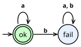
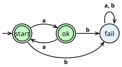

ProofScript — 7.6. Recursive Definitions
Reference home · Grammar: ps-0.9-r2 · Semantic pin: Lean 4.34.0 stable.
Use def for general declarations, function for an explicitly parameterized definition, and const for a parameterless definition. Keep theorem, example, abbrev and opaque distinct. Expression bodies end through native boundary and suffix rules, not an added semicolon. Dependent binders and named/default arguments preserve native elaboration. Structural and well-founded recursion need the native evidence; partial definitions keep their opaque logical interpretation and separately accounted executable bodies.
Compiler and coverage boundary. Preserve declaration kinds, safety/reducibility metadata, native termination suffixes and local capture. An abbreviation is not a fresh nominal type.
Inherited detail and attribution. The section below is adapted from the Apache-2.0 Lean reference mirrored at Definitions/Recursive-Definitions/index.html. Source Git blob: c51e1fc358a01a560fd0d9a98d3528f0b2b3855c. Its prose, API signatures and native names are retained where they describe the inherited semantics. Selected definition-keyword presentation aliases are recorded separately, not certified by a PSC parser. Native toolchains, intentional errors and historical releases keep their actual identities. The mirror contains rc2 material; the stable pin and stable-delta audit override conflicting claims.
7.6. Recursive Definitions
Allowing arbitrary recursive function definitions would make Lean's logic inconsistent. General recursion makes it possible to write circular proofs: “proposition P is true because proposition P is true”. Outside of proofs, an infinite loop could be assigned the type Empty, which can be used with nomatch or Empty.rec to prove any theorem.
Banning recursive function definitions outright would render Lean far less useful: inductive types are key to defining both predicates and data, and they have a recursive structure. Furthermore, most useful recursive functions do not threaten soundness, and infinite loops usually indicate mistakes in definitions rather than intentional behavior. Instead of banning recursive functions, Lean requires that each recursive function is defined safely. While elaborating recursive definitions, the Lean elaborator also produces a justification that the function being defined is safe.The section on the elaborator's output in the overview of elaboration contextualizes the elaboration of recursive definitions in the overall context of the elaborator.
There are six main kinds of recursive functions that can be defined:
Structurally recursive functions
Structurally recursive functions take an argument such that the function makes recursive calls only on strict sub-components of said argument.Strictly speaking, arguments whose types are indexed families are grouped together with their indices, with the whole collection considered as a unit. The elaborator translates the recursion into uses of the argument's recursor. Because every type-correct use of a recursor is guaranteed to avoid infinite regress, this translation is evidence that the function terminates. Applications of functions defined via recursors are definitionally equal to the result of the recursion, and are typically relatively efficient inside the kernel.
Recursion over well-founded relations
Many functions are also difficult to convert to structural recursion; for instance, a function may terminate because the difference between an array index and the size of the array decreases as the index increases, but Nat.rec isn't applicable because the index that increases is the function's argument. Here, there is a measure of termination that decreases at each recursive call, but the measure is not itself an argument to the function. In these cases, well-founded recursion can be used to define the function. Well-founded recursion is a technique for systematically transforming recursive functions with a decreasing measure into recursive functions over proofs that every sequence of reductions to the measure eventually terminates at a minimum. Applications of functions defined via well-founded recursion are not necessarily definitionally equal to their return values, but this equality can be proved as a proposition. Even when definitional equalities exist, these functions are frequently slow to compute with because they require reducing proof terms that are often very large.
Recursive functions as partial fixpoints
The definition of a function can be understood as an equation that specifies its behavior. In certain cases, the existence of a function that satisfies this specification can be proven even when the recursive function does not necessarily terminate for all inputs. This strategy is even applicable in some cases where the function definition does not necessarily terminate for all inputs. These partial functions emerge as fixed points of these equations are called partial fixpoints.
In particular, any function whose return type is in certain monads (e.g. Option) can be defined using this strategy. Lean generates additional partial correctness theorems for these monadic functions. As with well-founded recursion, applications of functions defined as partial fixpoints are not definitionally equal to their return values, but Lean generates theorems that propositionally equate the function to its unfolding and to the reduction behavior specified in its definition.
Coinductive and inductive predicates as fixpoints
Recursive Prop-valued functions can be defined as greatest or least fixpoints of monotone operators on complete lattices. Coinductive predicates, defined using coinductive_fixpoint or the coinductive command, describe potentially infinite behavior such as infinite sequences or bisimulation. Inductive predicates, defined using inductive_fixpoint, provide an alternative to standard inductive types that is compatible with mixed inductive-coinductive mutual blocks.
Partial functions with nonempty codomains
For many applications, it's not important to reason about the implementation of certain functions. A recursive function might be used only as part of the implementation of proof automation steps, or it might be an ordinary program that will never be formally proved correct. In these cases, the Lean kernel does not need either definitional or propositional equalities to hold for the definition; it suffices that soundness is maintained. Functions marked partial are treated as opaque constants by the kernel and are neither unfolded nor reduced. All that is required for soundness is that their return type is inhabited. Partial functions may still be used in compiled code as usual, and they may appear in propositions and proofs; their equational theory in Lean's logic is simply very weak.
Unsafe recursive definitions
Unsafe definitions have none of the restrictions of partial definitions. They may freely make use of general recursion, and they may use features of Lean that break assumptions about its equational theory, such as primitives for casting (unsafeCast), checking pointer equality (ptrAddrUnsafe), and observing reference counts (isExclusiveUnsafe). However, any declaration that refers to an unsafe definition must itself be marked unsafe, making it clear when logical soundness is not guaranteed. Unsafe operations can be used to replace the implementations of other functions with more efficient variants in compiled code, while the kernel still uses the original definition. The replaced function may be opaque, which results in the function name having a trivial equational theory in the logic, or it may be an ordinary function, in which case the function is used in the logic. Use this feature with care: logical soundness is not at risk, but the behavior of programs written in Lean may diverge from their verified logical models if the unsafe implementation is incorrect.
As described in the overview of the elaborator's output, elaboration of recursive functions proceeds in two phases:
- The definition is elaborated as if Lean's core type theory had recursive definitions. Aside from using recursion, this provisional definition is fully elaborated. The compiler generates code from these provisional definitions.
- A termination analysis attempts to use the five techniques to justify the function to Lean's kernel. If the definition is marked
unsafeorpartial, then that technique is used. If an explicittermination_by,partial_fixpoint,coinductive_fixpoint, orinductive_fixpointclause is present, then the indicated technique is the only one attempted. If there is no such clause, then the elaborator performs a search, testing each parameter to the function as a candidate for structural recursion, and attempting to find a measure with a well-founded relation that decreases at each recursive call.
This section describes the rules that govern recursive functions. After a description of mutual recursion, each of the five kinds of recursive definitions is specified, along with the tradeoffs between reasoning power and flexibility that go along with each.
7.6.1. Mutual Recursion
Just as a recursive definition is one that mentions the name being defined in the body of the definition, mutually recursive definitions are definitions that may be recursive or mention one another. To use mutual recursion between multiple declarations, they must be placed in a mutual block.
syntax
Mutual Declaration Blocks
The general syntax for mutual recursion is:
command ::= ...
| mutual
declaration*
end
where the declarations must be definitions or theorems.
The declarations in a mutual block are not in scope in each others' signatures, but they are in scope in each others' bodies. Even though the names are not in scope in signatures, they will not be inserted as auto-bound implicit parameters.
Names defined in a mutual block are not in scope in each others' signatures.
mutual
abbrev NaturalNum : Type := Nat
const n : NaturalNum := 5
end
Unknown identifier `NaturalNum`
Without the mutual block, the definition succeeds:
abbrev NaturalNum : Type := Nat
const n : NaturalNum := 5
Mutual Block Scope and Automatic Implicit Parameters
Names defined in a mutual block are not in scope in each others' signatures. Nonetheless, they cannot be used as automatic implicit parameters:
mutual
abbrev α : Type := Nat
function identity (x : α) : α := x
end
Unknown identifier `α`
With a different name, the implicit parameter is automatically added:
mutual
abbrev α : Type := Nat
function identity (x : β) : β := x
end
Elaborating recursive definitions always occurs at the granularity of mutual blocks, as if there were a singleton mutual block around every declaration that is not itself part of such a block. Local definitions introduced via let rec and where are lifted out of their context, introducing parameters for captured free variables as necessary, and treated as if they were separate definitions within the mutual block as well. Thus, helpers defined in a where block may use mutual recursion both with one another and with the definition in which they occur, but they may not mention each other in their type signatures.
After the first step of elaboration, in which definitions are still recursive, and before translating recursion using the techniques above, Lean identifies the actually (mutually) recursive cliques among the definitions in the mutual block and processes them separately and in dependency order.
7.6.2. Structural Recursion
Structurally recursive functions are those in which each recursive call is on a structurally smaller term than the argument. The same parameter must decrease in all recursive calls; this parameter is called the decreasing parameter. Structural recursion is stronger than the primitive recursion that recursors provide, because the recursive call can use more deeply nested sub-terms of the argument, rather than only an immediate sub-term. The constructions used to implement structural recursion are, however, implemented using the recursor; these helper constructions are described in the section on inductive types.
The rules that govern structural recursion are fundamentally syntactic in nature. There are many recursive definitions that exhibit structurally recursive computational behavior, but which are not accepted by these rules; this is a fundamental consequence of the analysis being fully automatic. Well-founded recursion provides a semantic approach to demonstrating termination that can be used in situations where a recursive function is not structurally recursive, but it can also be used when a function that computes according to structural recursion doesn't satisfy the syntactic requirements.
Structural Recursion vs Subtraction
The function countdown is structurally recursive. The parameter n was matched against the pattern n' + 1, which means that n' is a direct subterm of n in the second branch of the pattern match:
function countdown (n : Nat) : List Nat :=
match n with
| 0 => []
| n' + 1 => n' :: countdown n'
Replacing pattern matching with an equivalent Boolean test and subtraction results in an error:
function countdown' (n : Nat) : List Nat :=
if n == 0 then []
else
let n' := n - 1
n' :: countdown' n'
fail to show termination for
countdown'
with errors
failed to infer structural recursion:
Cannot use parameter n:
failed to eliminate recursive application
countdown' n'
failed to prove termination, possible solutions:
- Use `have`-expressions to prove the remaining goals
- Use `termination_by` to specify a different well-founded relation
- Use `decreasing_by` to specify your own tactic for discharging this kind of goal
n:Nath✝:¬(n == 0) = truen':Nat := n - 1⊢ n - 1 < n
This is because there was no pattern matching on the parameter n. While this function indeed terminates, the argument that it does so is based on properties of if, the equality test, and subtraction, rather than being a generic feature of Nat being an inductive type. These arguments are expressed using well-founded recursion, and a slight change to the function definition allows Lean's automatic support for well-founded recursion to construct an alternative termination proof. This version branches on the decidability of propositional equality for Nat rather than the result of a Boolean equality test:
function countdown' (n : Nat) : List Nat :=
if n = 0 then []
else
let n' := n - 1
n' :: countdown' n'
Here, Lean's automation automatically constructs a termination proof from facts about propositional equality and subtraction. It uses well-founded recursion rather than structural recursion behind the scenes.
Structural recursion may be used explicitly or automatically. With explicit structural recursion, the function definition declares which parameter is the decreasing parameter. If no termination strategy is explicitly declared, Lean performs a search for a decreasing parameter as well as a decreasing measure for use with well-founded recursion. Explicitly annotating structural recursion has the following benefits:
- It can speed up elaboration, because no search occurs.
- It documents the termination argument for readers.
- In situations where structural recursion is explicitly desired, it prevents the accidental use of well-founded recursion.
7.6.2.1. Explicit Structural Recursion
To explicitly use structural recursion, a function or theorem definition can be annotated with a termination_by structural clause that specifies the decreasing parameter. The decreasing parameter may be a reference to a parameter named in the signature. When the signature specifies a function type, the decreasing parameter may additionally be a parameter not named in the signature; in this case, names for the remaining parameters may be introduced by writing them before an arrow (=>).
Specifying Decreasing Parameters
When the decreasing parameter is a named parameter to the function, it can be specified by referring to its name.
function half (n : Nat) : Nat :=
match n with
| 0 | 1 => 0
| n + 2 => half n + 1
termination_by structural n
When the decreasing parameter is not named in the signature, a name can be introduced locally in the termination_by clause.
def half : Nat → Nat
| 0 | 1 => 0
| n + 2 => half n + 1
termination_by structural n => n
syntax
Explicit Structural Recursion
The termination_by structural clause introduces a decreasing parameter.
terminationBy ::= ...
| termination_by structural (ident* =>)? term
The identifiers before the optional => can bring function parameters into scope that are not already bound in the declaration header, and the mandatory term must indicate one of the function's parameters, whether introduced in the header or locally in the clause.
The decreasing parameter must satisfy the following conditions:
- Its type must be an inductive type.
- If its type is an indexed family, then all indices must be parameters of the function.
- If the inductive or indexed family of the decreasing parameter has data type parameters, then these data type parameters may themselves only depend on function parameters that are part of the fixed prefix.
A fixed parameter is a function parameter that is passed unmodified in all recursive calls and is not an index of the recursive parameter's type. The fixed prefix is the longest prefix of the function's parameters in which all are fixed.
Ineligible decreasing parameters
The decreasing parameter's type must be an inductive type. In notInductive, a function is specified as the decreasing parameter:
function notInductive (x : Nat → Nat) : Nat :=
notInductive (fun n => x (n+1))
termination_by structural x
cannot use specified measure for structural recursion:
its type is not an inductive
If the decreasing parameter is an indexed family, all the indices must be variables. In constantIndex, the indexed family Fin' is instead applied to a constant value:
inductive Fin' : Nat → Type where
| zero : Fin' (n+1)
| succ : Fin' n → Fin' (n+1)
function constantIndex (x : Fin' 100) : Nat := constantIndex .zero
termination_by structural x
cannot use specified measure for structural recursion:
its type Fin' is an inductive family and indices are not variables
Fin' 100
The parameters of the decreasing parameter's type must not depend on function parameters that come after varying parameters or indices. In afterVarying, the fixed prefix is empty, because the first parameter n varies, so p is not part of the fixed prefix:
inductive WithParam' (p : Nat) : Nat → Type where
| zero : WithParam' p (n+1)
| succ : WithParam' p n → WithParam' p (n+1)
function afterVarying (n : Nat) (p : Nat) (x : WithParam' p n) : Nat :=
afterVarying (n+1) p .zero
termination_by structural x
failed to infer structural recursion:
Cannot use parameter x:
failed to eliminate recursive application
afterVarying (n + 1) p WithParam'.zero
Furthermore, every recursive call of the functions must be on a strict sub-term of the decreasing parameter.
- The decreasing parameter itself is a sub-term, but not a strict sub-term.
- If a sub-term is the discriminant of a
matchexpression or other pattern-matching syntax, the pattern that matches the discriminant is a sub-term in the right-hand side of each match alternative. In particular, the rules of match generalization are used to connect the discriminant to the occurrences of the pattern term in the right-hand side; thus, it respects definitional equality. The pattern is a strict sub-term if and only if the discriminant is a strict sub-term. - If a sub-term is a constructor applied to arguments, then its recursive arguments are strict sub-terms.
In the following example, the decreasing parameter n is matched against the nested pattern .succ (.succ n). Therefore .succ (.succ n) is a (non-strict) sub-term of n, and consequently both n and .succ n are strict sub-terms, and the definition is accepted.
def fib : Nat → Nat
| 0 | 1 => 1
| .succ (.succ n) => fib n + fib (.succ n)
termination_by structural n => n
For clarity, this example uses .succ n and .succ (.succ n) instead of the equivalent Nat-specific n+1 and n+2.
Matching on Complex Expressions Can Prevent Elaboration
In the following example, the decreasing parameter n is not directly the discriminant of the match expression. Therefore, n' is not considered a sub-term of n.
function half (n : Nat) : Nat :=
match Option.some n with
| .some (n' + 2) => half n' + 1
| _ => 0
termination_by structural n
failed to infer structural recursion:
Cannot use parameter n:
failed to eliminate recursive application
half n'
Using well-founded recursion, and explicitly connecting the discriminant to the pattern of the match, this definition can be accepted.
function half (n : Nat) : Nat :=
match h : Option.some n with
| .some (n' + 2) => half n' + 1
| _ => 0
termination_by n
decreasing_by simp_all; omega
Similarly, the following example fails: although xs.tail would reduce to a strict sub-term of xs, this is not visible to Lean according to the rules above. In particular, xs.tail is not definitionally equal to a strict sub-term of xs.
def listLen : List α → Nat
| [] => 0
| xs => listLen xs.tail + 1
termination_by structural xs => xs
Simultaneous Matching vs Matching Pairs for Structural Recursion
An important consequence of the strategies that are used to prove termination is that simultaneous matching of two discriminants is not equivalent to matching a pair. Simultaneous matching maintains the connection between the discriminants and the patterns, allowing the pattern matching to refine the types of the assumptions in the local context as well as the expected type of the match. Essentially, the elaboration rules for match treat the discriminants specially, and changing discriminants in a way that preserves the run-time meaning of a program does not necessarily preserve the compile-time meaning.
This function that finds the minimum of two natural numbers is defined by structural recursion on its first parameter:
function min' (n k : Nat) : Nat :=
match n, k with
| 0, _ => 0
| _, 0 => 0
| n' + 1, k' + 1 => min' n' k' + 1
termination_by structural n
Replacing the simultaneous pattern match on both parameters with a match on a pair causes termination analysis to fail:
function min' (n k : Nat) : Nat :=
match (n, k) with
| (0, _) => 0
| (_, 0) => 0
| (n' + 1, k' + 1) => min' n' k' + 1
termination_by structural n
failed to infer structural recursion:
Cannot use parameter n:
failed to eliminate recursive application
min' n' k'
This is because the analysis only considers direct pattern matching on parameters when matching recursive calls to strictly-smaller argument values. Wrapping the discriminants in a pair breaks the connection.
Structural Recursion Under Pairs
This function that finds the minimum of the two components of a pair can't be elaborated via structural recursion.
function min' (nk : Nat × Nat) : Nat :=
match nk with
| (0, _) => 0
| (_, 0) => 0
| (n' + 1, k' + 1) => min' (n', k') + 1
termination_by structural nk
failed to infer structural recursion:
Cannot use parameter nk:
the type Nat × Nat does not have a `.brecOn` recursor
This is because the parameter's type, Prod, is not recursive. Thus, its constructor has no recursive parameters that can be exposed by pattern matching.
This definition is accepted using well-founded recursion, however:
function min' (nk : Nat × Nat) : Nat :=
match nk with
| (0, _) => 0
| (_, 0) => 0
| (n' + 1, k' + 1) => min' (n', k') + 1
termination_by nk
Structural Recursion and Definitional Equality
Even though the recursive occurrence of countdown is applied to a term that is not a strict sub-term of the decreasing parameter, the following definition is accepted:
function countdown (n : Nat) : List Nat :=
match n with
| 0 => []
| n' + 1 => n' :: countdown (n' + 0)
termination_by structural n
This is because n' + 0 is definitionally equal to n', which is a strict sub-term of n. Sub-terms that result from pattern matching are connected to the discriminant using the rules for match generalization, which respect definitional equality.
In countdown', the recursive occurrence is applied to 0 + n', which is not definitionally equal to n' because addition on natural numbers is structurally recursive in its second parameter:
function countdown' (n : Nat) : List Nat :=
match n with
| 0 => []
| n' + 1 => n' :: countdown' (0 + n')
termination_by structural n
failed to infer structural recursion:
Cannot use parameter n:
failed to eliminate recursive application
countdown' (0 + n')
7.6.2.2. Mutual Structural Recursion
Lean supports the definition of mutually recursive functions using structural recursion. Mutual recursion may be introduced using a mutual block, but it also results from let rec expressions and where blocks. The rules for mutual structural recursion are applied to a group of actually mutually recursive, lifted definitions, that results from the elaboration steps for mutual groups. If every function in the mutual group has a termination_by structural annotation indicating that function’s decreasing argument, then structural recursion is used to translate the definitions.
The requirements on the decreasing argument above are extended:
- All the types of all the decreasing arguments must be from the same inductive type, or more generally from the same mutual group of inductive types.
- The parameters of the decreasing parameter's types must be the same for all functions, and may depend only on the common fixed prefix of function arguments.
The functions do not have to be in a one-to-one correspondence to the mutual inductive types. Multiple functions can have a decreasing argument of the same type, and not all types that are mutually recursive with the decreasing argument need have a corresponding function.
Mutual Structural Recursion Over Non-Mutual Types
The following example demonstrates mutual recursion over a non-mutual inductive data type:
mutual
def even : Nat → Prop
| 0 => True
| n+1 => odd n
termination_by structural n => n
def odd : Nat → Prop
| 0 => False
| n+1 => even n
termination_by structural n => n
end
Mutual Structural Recursion Over Mutual Types
The following example demonstrates recursion over mutually inductive types. The functions Exp.size and App.size are mutually recursive.
mutual
inductive Exp where
| var : String → Exp
| app : App → Exp
inductive App where
| fn : String → App
| app : App → Exp → App
end
mutual
def Exp.size : Exp → Nat
| .var _ => 1
| .app a => a.size
termination_by structural e => e
def App.size : App → Nat
| .fn _ => 1
| .app a e => a.size + e.size + 1
termination_by structural a => a
end
The definition of App.numArgs is structurally recursive over type App. It demonstrates that not all inductive types in the mutual group need to be handled.
def App.numArgs : App → Nat
| .fn _ => 0
| .app a _ => a.numArgs + 1
termination_by structural a => a
7.6.2.3. Inferring Structural Recursion
If no termination_by clauses are present in a recursive or mutually recursive function definition, then Lean attempts to infer a suitable structurally decreasing argument, effectively by trying all suitable parameters in sequence. If this search fails, Lean then attempts to infer well-founded recursion.
For mutually recursive functions, all combinations of parameters are tried, up to a limit to avoid combinatorial explosion. If only some of the mutually recursive functions have termination_by structural clauses, then only those parameters are considered, while for the other functions all parameters are considered for structural recursion.
A termination_by? clause causes the inferred termination annotation to be shown. It can be automatically added to the source file using the offered suggestion or code action.
Inferred Termination Annotations
Lean automatically infers that the function half is structurally recursive. The termination_by? clause causes the inferred termination annotation to be displayed, and it can be automatically added to the source file with a single click.
def half : Nat → Nat
| 0 | 1 => 0
| n + 2 => half n + 1
termination_by?
Try this:
[apply] termination_by structural x => x
7.6.2.4. Elaboration Using Course-of-Values Recursion
In this section, the construction used to elaborate structurally recursive functions is explained in more detail. This elaboration uses the below and brecOn constructions that are automatically generated from inductive types' recursors.
Addition of natural numbers can be defined via recursion on the second argument. This function is straightforwardly structurally recursive.
def add (n : Nat) : Nat → Nat
| .zero => n
| .succ k => .succ (add n k)
Defined using Nat.rec, it is much further from the notations that most people are used to.
function add' (n : Nat) :=
Nat.rec (motive := fun _ => Nat)
n
(fun k soFar => .succ soFar)
Structural recursive calls made on data that isn't the immediate child of the function parameter requires either creativity or a complex yet systematic encoding.
def half : Nat → Nat
| 0 | 1 => 0
| n + 2 => half n + 1
One way to think about this function is as a structural recursion that flips a bit at each call, only incrementing the result when the bit is set.
const helper : Nat → Bool → Nat :=
Nat.rec (motive := fun _ => Bool → Nat)
(fun _ => 0)
(fun _ soFar =>
fun b =>
(if b then Nat.succ else id) (soFar !b))
function half' (n : Nat) : Nat := helper n false
#eval [0, 1, 2, 3, 4, 5, 6, 7, 8].map half'
[0, 0, 1, 1, 2, 2, 3, 3, 4]
Instead of creativity, a general technique called
course-of-values recursion can be used. Course-of-values recursion uses helpers that can be systematically derived for every inductive type, defined in terms of the recursor; Lean derives them automatically. For every Nat n, the type n.below (motive := mot) provides a value of type mot k for all k < n, represented as an iterated dependent pair type. The course-of-values recursor Nat.brecOn allows a function to use the result for any smaller Nat. Using it to define the function is inconvenient:
noncomputable function half'' (n : Nat) : Nat :=
Nat.brecOn n (motive := fun _ => Nat)
fun k soFar =>
match k, soFar with
| 0, _ | 1, _ => 0
| _ + 2, ⟨_, ⟨h, _⟩⟩ => h + 1
The function is marked noncomputable because the compiler doesn't support generating code for course-of-values recursion, which is intended for reasoning rather that efficient code. The kernel can still be used to test the function, however:
#reduce [0,1,2,3,4,5,6,7,8].map half''
[0, 0, 1, 1, 2, 2, 3, 3, 4]
The dependent pattern matching in the body of half'' can also be encoded using recursors (specifically, Nat.casesOn), if necessary:
noncomputable function half''' (n : Nat) : Nat :=
n.brecOn (motive := fun _ => Nat)
fun k =>
k.casesOn
(motive :=
fun k' =>
(k'.below (motive := fun _ => Nat)) →
Nat)
(fun _ => 0)
(fun k' =>
k'.casesOn
(motive :=
fun k'' =>
(k''.succ.below (motive := fun _ => Nat)) →
Nat)
(fun _ => 0)
(fun _ soFar => soFar.2.1.succ))
This definition still works.
#reduce [0,1,2,3,4,5,6,7,8].map half''
[0, 0, 1, 1, 2, 2, 3, 3, 4]
However, it is now far from the original definition and it has become difficult for most people to understand. Recursors are an excellent logical foundation, but not an easy way to write programs or proofs.
The structural recursion analysis attempts to translate the recursive pre-definition into a use of the appropriate structural recursion constructions. At this step, pattern matching has already been translated into the use of matcher functions; these are treated specially by the termination checker. Next, for each group of parameters, a translation using brecOn is attempted.
This definition is equivalent to List.below:
def List.below' {α : Type u} {motive : List α → Sort u} :
List α → Sort (max (u + 1) u)
| [] => PUnit
| _ :: xs => motive xs ×' xs.below' (motive := motive)
In other words, for a given motive, List.below' is a type that contains a realization of the motive for all suffixes of the list.
More recursive arguments require further nested iterations of the product type. For instance, binary trees have two recursive occurrences.
inductive Tree (α : Type u) : Type u where
| leaf
| branch (left : Tree α) (val : α) (right : Tree α)
Its corresponding course-of-values table contains the realizations of the motive for all subtrees:
def Tree.below' {α : Type u} {motive : Tree α → Sort u} :
Tree α → Sort (max (u + 1) u)
| .leaf => PUnit
| .branch left _val right =>
(motive left ×' left.below' (motive := motive)) ×'
(motive right ×' right.below' (motive := motive))
For both lists and trees, the brecOn operator expects just a single case, rather than one per constructor. This case accepts a list or tree along with a table of results for all smaller values; from this, it should satisfy the motive for the provided value. Dependent case analysis of the provided value automatically refines the type of the memo table, providing everything needed.
The following definitions are equivalent to List.brecOn and Tree.brecOn, respectively. The primitive recursive helpers List.brecOnTable and Tree.brecOnTable compute the course-of-values tables along with the final results, and the actual definitions of the brecOn operators simply project out the result.
function List.brecOnTable {α : Type u}
{motive : List α → Sort u}
(xs : List α)
(step :
(ys : List α) →
ys.below' (motive := motive) →
motive ys) :
motive xs ×' xs.below' (motive := motive) :=
match xs with
| [] => ⟨step [] PUnit.unit, PUnit.unit⟩
| x :: xs =>
let res := xs.brecOnTable (motive := motive) step
let val := step (x :: xs) res
⟨val, res⟩
function Tree.brecOnTable {α : Type u}
{motive : Tree α → Sort u}
(t : Tree α)
(step :
(ys : Tree α) →
ys.below' (motive := motive) →
motive ys) :
motive t ×' t.below' (motive := motive) :=
match t with
| .leaf => ⟨step .leaf PUnit.unit, PUnit.unit⟩
| .branch left val right =>
let resLeft := left.brecOnTable (motive := motive) step
let resRight := right.brecOnTable (motive := motive) step
let branchRes := ⟨resLeft, resRight⟩
let val := step (.branch left val right) branchRes
⟨val, branchRes⟩
function List.brecOn' {α : Type u}
{motive : List α → Sort u}
(xs : List α)
(step :
(ys : List α) →
ys.below' (motive := motive) →
motive ys) :
motive xs :=
(xs.brecOnTable (motive := motive) step).1
function Tree.brecOn' {α : Type u}
{motive : Tree α → Sort u}
(t : Tree α)
(step :
(ys : Tree α) →
ys.below' (motive := motive) →
motive ys) :
motive t :=
(t.brecOnTable (motive := motive) step).1
The below construction is a mapping from each value of a type to the results of some function call on all smaller values; it can be understood as a memoization table that already contains the results for all smaller values. The notion of “smaller value” that is expressed in the below construction corresponds directly to the definition of strict sub-terms.
Recursors expect an argument for each of the inductive type's constructors; these arguments are called with the constructor's arguments (and the result of recursion on recursive parameters) during ι-reduction. The course-of-values recursion operator brecOn, on the other hand, expects just a single case that covers all constructors at once. This case is provided with a value and a below table that contains the results of recursion on all values smaller than the given value; it should use the contents of the table to satisfy the motive for the provided value. If the function is structurally recursive over a given parameter (or parameter group), then the results of all recursive calls will be present in this table already.
When the body of the recursive function is transformed into an invocation of brecOn on one of the function's parameters, the parameter and its course-of-values table are in scope. The analysis traverses the body of the function, looking for recursive calls. If the parameter is matched against, then its occurrences in the local context are generalized and then instantiated with the pattern; this is also true for the type of the course-of-values table. Typically, this pattern matching results in the type of the course-of-values table becoming more specific, which gives access to the recursive results for smaller values. This generalization process implements the rule that patterns are sub-terms of match discriminants. When an recursive occurrence of the function is detected, the course-of-values table is consulted to see whether it contains a result for the argument being checked. If so, the recursive call can be replaced with a projection from the table. If not, then the parameter in question doesn't support structural recursion.
The first step in walking through the elaboration of half is to manually desugar it to a simpler form. This doesn't match the way Lean works, but its output is much easier to read when there are fewer OfNat instances present. This readable definition:
def half : Nat → Nat
| 0 | 1 => 0
| n + 2 => half n + 1
can be rewritten to this somewhat lower-level version:
def half : Nat → Nat
| .zero | .succ .zero => .zero
| .succ (.succ n) => half n |>.succ
The elaborator begins by elaborating a pre-definition in which recursion is still present but the definition is otherwise in Lean's core type theory. Turning on the compiler's tracing of pre-definitions, as well as making the pretty printer more explicit, makes the resulting pre-definition visible:
set_option trace.Elab.definition.body true in
set_option pp.all true in
def half : Nat → Nat
| .zero | .succ .zero => .zero
| .succ (.succ n) => half n |>.succ
The returned trace message is:
[Elab.definition.body] half : Nat → Nat :=
fun (x : Nat) =>
half.match_1.{1} (fun (x : Nat) => Nat) x
(fun (_ : Unit) => Nat.zero)
(fun (_ : Unit) => Nat.zero)
fun (n : Nat) => Nat.succ (half n)
The auxiliary match function's definition is:
#print half.match_1
@[instance_reducible] def half.match_1.{u_1} : (motive : Nat → Sort u_1) →
(x : Nat) → (Unit → motive Nat.zero) → (Unit → motive 1) → ((n : Nat) → motive n.succ.succ) → motive x :=
fun motive x h_1 h_2 h_3 => Nat.casesOn x (h_1 ()) fun n => Nat.casesOn n (h_2 ()) fun n => h_3 n
Formatted more readably, this definition is:
def half.match_1'.{u} :
(motive : Nat → Sort u) → (x : Nat) →
(Unit → motive Nat.zero) → (Unit → motive 1) →
((n : Nat) → motive n.succ.succ) →
motive x :=
fun motive x h_1 h_2 h_3 =>
Nat.casesOn x (h_1 ()) fun n =>
Nat.casesOn n (h_2 ()) fun n =>
h_3 n
In other words, the specific configuration of patterns used in half are captured in half.match_1.
This definition is a more readable version of half's pre-definition:
const half' : Nat → Nat :=
fun (x : Nat) =>
half.match_1 (motive := fun _ => Nat) x
(fun _ => 0) -- Case for 0
(fun _ => 0) -- Case for 1
(fun n => Nat.succ (half' n)) -- Case for n + 2
To elaborate it as a structurally recursive function, the first step is to establish the bRecOn invocation. The definition must be marked noncomputable because Lean does not support code generation for recursors such as Nat.brecOn.
noncomputable
const half'' : Nat → Nat :=
fun (x : Nat) =>
x.brecOn fun n table =>
_
/- To translate:
half.match_1 (motive := fun _ => Nat) x
(fun _ => 0) -- Case for 0
(fun _ => 0) -- Case for 1
(fun n => Nat.succ (half' n)) -- Case for n + 2
-/
The next step is to replace occurrences of x in the original function body with the n provided by brecOn. Because table's type depends on x, it must also be generalized when splitting cases with half.match_1, leading to a motive with an extra parameter.
noncomputable
const half'' : Nat → Nat :=
fun (x : Nat) =>
x.brecOn fun n table =>
(half.match_1
(motive :=
fun k =>
k.below (motive := fun _ => Nat) →
Nat)
n
_
_
_)
table
/- To translate:
(fun _ => 0) -- Case for 0
(fun _ => 0) -- Case for 1
(fun n => Nat.succ (half' n)) -- Case for n + 2
-/
The three cases' placeholders expect the following types:
don't know how to synthesize placeholder for argument `h_1`
context:
x n:Nattable:Nat.below n⊢ Unit → Nat.below Nat.zero → Nat
don't know how to synthesize placeholder for argument `h_2`
context:
x n:Nattable:Nat.below n⊢ Unit → Nat.below 1 → Nat
don't know how to synthesize placeholder for argument `h_3`
context:
x n:Nattable:Nat.below n⊢ (n : Nat) → Nat.below n.succ.succ → Nat
The first two cases in the pre-definition are constant functions, with no recursion to check:
noncomputable
const half'' : Nat → Nat :=
fun (x : Nat) =>
x.brecOn fun n table =>
(half.match_1
(motive :=
fun k =>
k.below (motive := fun _ => Nat) →
Nat)
n
(fun () _ => .zero)
(fun () _ => .zero)
_)
table
/- To translate:
(fun n => Nat.succ (half' n)) -- Case for n + 2
-/
The final case contains a recursive call. It should be translated into a lookup into the course-of-values table. A more readable representation of the last hole's type is:
(n : Nat) →
Nat.below (motive := fun _ => Nat) n.succ.succ →
Nat
which is equivalent to
(n : Nat) →
Nat ×' (Nat ×' Nat.below (motive := fun _ => Nat) n) →
Nat
The first Nat in the course-of-values table is the result of recursion on n + 1, and the second is the result of recursion on n. The recursive call can thus be replaced by a lookup, and the elaboration is successful:
noncomputable
const half'' : Nat → Nat :=
fun (x : Nat) =>
x.brecOn fun n table =>
(half.match_1
(motive :=
fun k =>
k.below (motive := fun _ => Nat) →
Nat)
n
(fun () _ => .zero)
(fun () _ => .zero)
(fun _ table => Nat.succ table.2.1)
table
The actual elaborator keeps track of the relationship between the parameter being checked for structural recursion and the positions in the course-of-values tables by inserting sentinel types with fresh names into the motive.
7.6.3. Well-Founded Recursion
Functions defined by well-founded recursion are those in which each recursive call has arguments that are smaller (in a suitable sense) than the functions' parameters. In contrast to structural recursion, in which recursive definitions must satisfy particular syntactic requirements, definitions that use well-founded recursion employ semantic arguments. This allows a larger class of recursive definitions to be accepted. Furthermore, when Lean's automation fails to construct a termination proof, it is possible to specify one manually.
All definitions are treated identically by the Lean compiler. In Lean's logic, definitions that use well-founded recursion typically do not reduce definitionally. The reductions do hold as propositional equalities, however, and Lean automatically proves them. This does not typically make it more difficult to prove properties of definitions that use well-founded recursion, because the propositional reductions can be used to reason about the behavior of the function. It does mean, however, that using these functions in types typically does not work well. Even when the reduction behavior happens to hold definitionally, it is often much slower than structurally recursive definitions in the kernel, which must unfold the termination proof along with the definition. When possible, recursive function that are intended for use in types or in other situations where definitional equality is important should be defined with structural recursion.
To explicitly use well-founded recursion, a function or theorem definition can be annotated with a termination_by clause that specifies the
measure by which the function terminates. The measure should be a term that decreases at each recursive call; it may be one of the function's parameters or a tuple of the parameters, but it may also be any other term. The measure's type must be equipped with a well-founded relation, which determines what it means for the measure to decrease.
syntax
Explicit Well-Founded Recursion
The termination_by clause introduces the termination argument.
terminationBy ::= ...
| termination_by (ident* =>)? term
The identifiers before the optional => can bring function parameters into scope that are not already bound in the declaration header, and the mandatory term must indicate one of the function's parameters, whether introduced in the header or locally in the clause.
Division by Iterated Subtraction
Division can be specified as the number of times the divisor can be subtracted from the dividend. This operation cannot be elaborated using structural recursion because subtraction is not pattern matching. The value of n does decrease with each recursive call, so well-founded recursion can be used to justify the definition of division by iterated subtraction.
function div (n k : Nat) : Nat :=
if k = 0 then 0
else if k > n then 0
else 1 + div (n - k) k
termination_by n
7.6.3.1. Well-Founded Relations
A relation ≺ is a
well-founded relation if there exists no infinitely descending chain
x_0 ≻ x_1 ≻ \cdots
In Lean, types that are equipped with a canonical well-founded relation are instances of the WellFoundedRelation type class.
type class
WellFoundedRelation.{u} (α : Sort u) : Sort (max 1 u)
A type that has a standard well-founded relation.
Instances are used to prove that functions terminate using well-founded recursion by showing that recursive calls reduce some measure according to a well-founded relation. This relation can combine well-founded relations on the recursive function's parameters.
Instance Constructor
WellFoundedRelation.mk.{u}
Methods
rel : α → α → Prop
A well-founded relation on α.
wf : WellFounded WellFoundedRelation.rel
A proof that rel is, in fact, well-founded.
The most important instances are:
Nat, ordered by(· < ·).Prod, ordered lexicographically:(a₁, b₁) ≺ (a₂, b₂)if and only ifa₁ ≺ a₂ora₁ = a₂andb₁ ≺ b₂.- Every type that is an instance of the
SizeOftype class, which provides a methodSizeOf.sizeOf, has a well-founded relation. For these types,x₁ ≺ x₂if and only ifsizeOf x₁ < sizeOf x₂. For inductive types, aSizeOfinstance is automatically derived by Lean.
Note that there exists a low-priority instance instSizeOfDefault that provides a SizeOf instance for any type, and always returns 0. This instance cannot be used to prove that a function terminates using well-founded recursion because 0 < 0 is false.
Function types in general do not have a well-founded relation that's useful for termination proofs. Instance synthesis thus selects instSizeOfDefault and the corresponding well-founded relation. If the measure is a function, the default SizeOf instance is selected and the proof cannot succeed.
function fooInst (b : Bool → Bool) : Unit := fooInst (b ∘ b)
termination_by b
decreasing_by
guard_target =
@sizeOf (Bool → Bool) (instSizeOfDefault _) (b ∘ b) < sizeOf b
simp only [sizeOf, default.sizeOf]
guard_target = 0 < 0
simp
guard_target = False
sorry
7.6.3.2. Termination proofs
Once a measure is specified and its well-founded relation is determined, Lean determines the termination proof obligation for every recursive call.
The proof obligation for each recursive call is of the form g a₁ a₂ … ≺ g p₁ p₂ …, where:
gis the measure as a function of the parameters,≺is the inferred well-founded relation,a₁a₂…are the arguments of the recursive call andp₁p₂…are the parameters of the function definition.
The context of the proof obligation is the local context of the recursive call. In particular, local assumptions (such as those introduced by if h : _, match h : _ with or have) are available. If a function parameter is the discriminant of a pattern match (e.g. by a match expression), then this parameter is refined to the matched pattern in the proof obligation.
The overall termination proof obligation consists of one goal for each recursive call. By default, the tactic decreasing_trivial is used to prove each proof obligation. A custom tactic script can be provided using the optional decreasing_by clause, which comes after the termination_by clause. This tactic script is run once, with one goal for each proof obligation, rather than separately on each proof obligation.
The following recursive definition of the Fibonacci numbers has two recursive calls, which results in two goals in the termination proof.
function fib (n : Nat) :=
if h : n ≤ 1 then
1
else
fib (n - 1) + fib (n - 2)
termination_by n
decreasing_by
skip
Here, the measure is simply the parameter itself, and the well-founded order is the less-than relation on natural numbers. The first proof goal requires the user to prove that the argument of the first recursive call, namely n - 1, is strictly smaller than the function's parameter, n.
Both termination proofs can be easily discharged using the omega tactic.
function fib (n : Nat) :=
if h : n ≤ 1 then
1
else
fib (n - 1) + fib (n - 2)
termination_by n
decreasing_by
· omega
· omega
If a parameter of the function is the discriminant of a pattern match, then the proof obligations mention the refined parameter.
def fib : Nat → Nat
| 0 | 1 => 1
| .succ (.succ n) => fib (n + 1) + fib n
termination_by n => n
decreasing_by
skip
Additionally, the context is enriched with additional assumptions that can make it easier to prove termination. Some examples include:
- In the branches of an if-then-else expression, a hypothesis that asserts the current branch's condition is added, much as if the dependent if-then-else syntax had been used.
- In the function argument to certain higher-order functions, the context of the function's body is enriched with assumptions about the argument.
This list is not exhaustive, and the mechanism is extensible. It is described in detail in the section on preprocessing.
Enriched Proof Obligation Contexts
Here, the if does not add a local assumption about the condition (that is, whether n ≤ 1) to the local contexts in the branches.
function fib (n : Nat) :=
if n ≤ 1 then
1
else
fib (n - 1) + fib (n - 2)
termination_by n
decreasing_by
skip
Nevertheless, the assumptions are available in the context of the termination proof:
Termination proof obligations in body of a for…in loop are also enriched, in this case with a Std.Legacy.Range membership hypothesis:
function f (xs : Array Nat) : Nat := Id.run do
let mut s := xs.sum
for i in [:xs.size] do
s := s + f (xs.take i)
pure s
termination_by xs
decreasing_by
skip
Similarly, in the following (contrived) example, the termination proof contains an additional assumption showing that x ∈ xs.
function f (n : Nat) (xs : List Nat) : Nat :=
List.sum (xs.map (fun x => f x []))
termination_by xs
decreasing_by
skip
This feature requires special setup for the higher-order function under which the recursive call is nested, as described in the section on preprocessing. In the following definition, identical to the one above except using a custom, equivalent function instead of List.map, the proof obligation context is not enriched:
const List.myMap := @List.map
function f (n : Nat) (xs : List Nat) : Nat :=
List.sum (xs.myMap (fun x => f x []))
termination_by xs
decreasing_by
skip
7.6.3.3. Default Termination Proof Tactic
If no decreasing_by clause is given, then the decreasing_tactic is used implicitly, and applied to each proof obligation separately.
tactic
decreasing_tactic
The tactic decreasing_tactic mainly deals with lexicographic ordering of tuples, applying Prod.Lex.right if the left components of the product are definitionally equal, and Prod.Lex.left otherwise. After preprocessing tuples this way, it calls the decreasing_trivial tactic.
tactic
decreasing_trivial
Extensible helper tactic for decreasing_tactic. This handles the "base case" reasoning after applying lexicographic order lemmas. It can be extended by adding more macro definitions, e.g.
macro_rules | `(tactic| decreasing_trivial) => `(tactic| linarith)
The tactic decreasing_trivial is an extensible tactic that applies a few common heuristics to solve a termination goal. In particular, it tries the following tactics and theorems:
simp_arithassumption- theorems
Nat.sub_succ_lt_self,Nat.pred_lt_of_lt, andNat.pred_lt, which handle common arithmetic goals omegaarray_get_decandarray_mem_dec, which prove that the size of array elements is less than the size of the arraysizeOf_list_decthat the size of list elements is less than the size of the listString.Legacy.Iterator.sizeOf_next_lt_of_hasNextandString.Legacy.Iterator.sizeOf_next_lt_of_atEnd, to handle iteration through a string usingfor
This tactic is intended to be extended with further heuristics using macro_rules.
No Backtracking of Lexicographic Order
A classic example of a recursive function that needs a more complex measure is the Ackermann function:
def ack : Nat → Nat → Nat
| 0, n => n + 1
| m + 1, 0 => ack m 1
| m + 1, n + 1 => ack m (ack (m + 1) n)
termination_by m n => (m, n)
The measure is a tuple, so every recursive call has to be on arguments that are lexicographically smaller than the parameters. The default decreasing_tactic can handle this.
In particular, note that the third recursive call has a second argument that is smaller than the second parameter and a first argument that is definitionally equal to the first parameter. This allowed decreasing_tactic to apply Prod.Lex.right.
Prod.Lex.right {α β} {ra : α → α → Prop} {rb : β → β → Prop}
(a : α) {b₁ b₂ : β}
(h : rb b₁ b₂) :
Prod.Lex ra rb (a, b₁) (a, b₂)
It fails, however, with the following modified function definition, where the third recursive call's first argument is provably smaller or equal to the first parameter, but not syntactically equal:
def synack : Nat → Nat → Nat
| 0, n => n + 1
| m + 1, 0 => synack m 1
| m + 1, n + 1 => synack m (synack (m / 2 + 1) n)
termination_by m n => (m, n)
failed to prove termination, possible solutions:
- Use `have`-expressions to prove the remaining goals
- Use `termination_by` to specify a different well-founded relation
- Use `decreasing_by` to specify your own tactic for discharging this kind of goal
m n:Nat⊢ m / 2 + 1 < m + 1
Because Prod.Lex.right is not applicable, the tactic used Prod.Lex.left, which resulted in the unprovable goal above.
This function definition may require a manual proof that uses the more general theorem Prod.Lex.right', which allows the first component of the tuple (which must be of type Nat) to be less or equal instead of strictly equal:
Prod.Lex.right' {β} (rb : β → β → Prop)
{a₂ : Nat} {b₂ : β} {a₁ : Nat} {b₁ : β}
(h₁ : a₁ ≤ a₂) (h₂ : rb b₁ b₂) :
Prod.Lex Nat.lt rb (a₁, b₁) (a₂, b₂)
def synack : Nat → Nat → Nat
| 0, n => n + 1
| m + 1, 0 => synack m 1
| m + 1, n + 1 => synack m (synack (m / 2 + 1) n)
termination_by m n => (m, n)
decreasing_by
· apply Prod.Lex.left
omega
-- the next goal corresponds to the third recursive call
· apply Prod.Lex.right'
· omega
· omega
· apply Prod.Lex.left
omega
The decreasing_tactic tactic does not use the stronger Prod.Lex.right' because it would require backtracking on failure.
7.6.3.4. Inferring Well-Founded Recursion
If a recursive function definition does not indicate a termination measure, Lean will attempt to discover one automatically. If neither termination_by nor decreasing_by is provided, Lean will try to infer structural recursion before attempting well-founded recursion. If a decreasing_by clause is present, only well-founded recursion is attempted.
To infer a suitable termination measure, Lean considers multiple
basic termination measures, which are termination measures of type Nat, and then tries all tuples of these measures.
The basic termination measures considered are:
- all parameters whose type have a non-trivial
SizeOfinstance - the expression
e₂ - e₁whenever the local context of a recursive call has an assumption of typee₁ < e₂ore₁ ≤ e₂, wheree₁ande₂are of typeNatand depend only on the function's parameters. This approach is based on work by Panagiotis Manolios and Daron Vroon, 2006. “Termination Analysis with Calling Context Graphs”. In Proceedings of the International Conference on Computer Aided Verification (CAV 2006). (LNCS 4144). - in a mutual group, an additional basic measure is used to distinguish between recursive calls to other functions in the group and recursive calls to the function being defined (for details, see the section on mutual well-founded recursion)
Candidate measures are basic measures or tuples of basic measures. If any of the candidate measures allow all proof obligations to be discharged by the termination proof tactic (that is, the tactic specified by decreasing_by, or decreasing_trivial if there is no decreasing_by clause), then an arbitrary such candidate measure is selected as the automatic termination measure.
A termination_by? clause causes the inferred termination annotation to be shown. It can be automatically added to the source file using the offered suggestion or code action.
To avoid the combinatorial explosion of trying all tuples of measures, Lean first tabulates all basic termination measures, determining whether the basic measure is decreasing, strictly decreasing, or non-decreasing. A decreasing measure is smaller for at least one recursive call and never increases at any recursive call, while a strictly decreasing measure is smaller at all recursive calls. A non-decreasing measure is one that the termination tactic could not show to be decreasing or strictly decreasing. A suitable tuple is chosen based on the table.This approach is based on Lukas Bulwahn, Alexander Krauss, and Tobias Nipkow, 2007. “Finding Lexicographic Orders for Termination Proofs in Isabelle/HOL”. In Proceedings of the International Conference on Theorem Proving in Higher Order Logics (TPHOLS 2007). (LNTCS 4732). This table shows up in the error message when no automatic measure could be found.
If there is no termination_by clause, Lean attempts to infer a measure for well-founded recursion. If it fails, then it prints the table mentioned above. In this example, the decreasing_by clause simply prevents Lean from also attempting structural recursion; this keeps the error message specific.
def f : (n m l : Nat) → Nat
| n+1, m+1, l+1 => [
f (n+1) (m+1) (l+1),
f (n+1) (m-1) (l),
f (n) (m+1) (l) ].sum
| _, _, _ => 0
decreasing_by all_goals decreasing_tactic
Could not find a decreasing measure.
The basic measures relate at each recursive call as follows:
(<, ≤, =: relation proved, ? all proofs failed, _: no proof attempted)
n m l
1) 32:6-25 = = =
2) 33:6-23 = < _
3) 34:6-23 < _ _
Please use `termination_by` to specify a decreasing measure.
The three recursive calls are identified by their source positions. This message conveys the following facts:
- In the first recursive call, all arguments are (provably) equal to the parameters
- In the second recursive call, the first argument is equal to the first parameter and the second argument is provably smaller than the second parameter. The third parameter was not checked for this recursive call, because it was not necessary to determine that no suitable termination argument exists.
- In the third recursive call, the first argument decreases strictly, and the other arguments were not checked.
When termination proofs fail in this manner, a good technique to discover the problem is to explicitly indicate the expected termination argument using termination_by. This will surface the messages from the failing tactic.
The purpose of considering expressions of the form e₂ - e₁ as measures is to support the common idiom of counting up to some upper bound, in particular when traversing arrays in possibly interesting ways. In the following function, which performs binary search on a sorted array, this heuristic helps Lean to find the j - i measure.
function binarySearch (x : Int) (xs : Array Int) : Option Nat :=
go 0 xs.size
where
go (i j : Nat) (hj : j ≤ xs.size := by omega) :=
if h : i < j then
let mid := (i + j) / 2
let y := xs[mid]
if x = y then
some mid
else if x < y then
go i mid
else
go (mid + 1) j
else
none
termination_by?
The fact that the inferred termination argument uses some arbitrary measure, rather than an optimal or minimal one, is visible in the inferred measure, which contains a redundant j:
Try this:
[apply] termination_by (j, j - i)
Termination Proof Tactics During Inference
The tactic indicated by decreasing_by is used slightly differently when inferring the termination measure than it is in the actual termination proof.
- During inference, it is applied to a single goal, attempting to prove
<or≤onNat. - During the termination proof, it is applied to many simultaneous goals (one per recursive call), and the goals may involve the lexicographic ordering of pairs.
A consequence is that a decreasing_by block that addresses goals individually and which works successfully with an explicit termination argument can cause inference of the termination measure to fail:
def ack : Nat → Nat → Nat
| 0, n => n + 1
| m + 1, 0 => ack m 1
| m + 1, n + 1 => ack m (ack (m + 1) n)
decreasing_by
· apply Prod.Lex.left
omega
· apply Prod.Lex.right
omega
· apply Prod.Lex.left
omega
It is advisable to always include a termination_by clause whenever an explicit decreasing_by proof is given.
Because decreasing_tactic avoids the need to backtrack by being incomplete with regard to lexicographic ordering, Lean may infer a termination measure that leads to goals that the tactic cannot prove. In this case, the error message is the one that results from the failing tactic rather than the one that results from being unable to find a measure. This is what happens in notAck:
def notAck : Nat → Nat → Nat
| 0, n => n + 1
| m + 1, 0 => notAck m 1
| m + 1, n + 1 => notAck m (notAck (m / 2 + 1) n)
decreasing_by all_goals decreasing_tactic
failed to prove termination, possible solutions:
- Use `have`-expressions to prove the remaining goals
- Use `termination_by` to specify a different well-founded relation
- Use `decreasing_by` to specify your own tactic for discharging this kind of goal
m n:Nat⊢ m / 2 + 1 < m + 1
In this case, explicitly stating the termination measure helps.
7.6.3.5. Mutual Well-Founded Recursion
Lean supports the definition of mutually recursive functions using well-founded recursion. Mutual recursion may be introduced using a mutual block, but it also results from let rec expressions and where blocks. The rules for mutual well-founded recursion are applied to a group of actually mutually recursive, lifted definitions, that results from the elaboration steps for mutual groups.
If any function in the mutual group has a termination_by or decreasing_by clause, well-founded recursion is attempted. If a termination measure is specified using termination_by for any function in the mutual group, then all functions in the group must specify a termination measure, and they have to have the same type.
If no termination argument is specified, the termination argument is inferred, as described above. In the case of mutual recursion, a third class of basic measures is considered during inference, namely for each function in the mutual group the measure that is 1 for that function and 0 for the others. This allows Lean to order the functions so that some calls from one function to another are allowed even if the parameters do not decrease.
Mutual recursion without parameter decrease
In the following mutual function definitions, the parameter does not decrease in the call from g to f. Nonetheless, the definition is accepted due to the ordering imposed on the functions themselves by the additional basic measure.
mutual
def f : (n : Nat) → Nat
| 0 => 0
| n + 1 => g n
termination_by?
function g (n : Nat) : Nat := (f n) + 1
termination_by?
end
The inferred termination argument for f is:
Try this:
[apply] termination_by n => (n, 0)
The inferred termination argument for g is:
Try this:
[apply] termination_by (n, 1)
7.6.3.6. Preprocessing Function Definitions
Lean preprocesses the function's body before determining the proof obligations at each call site, transforming it into an equivalent definition that may include additional information. This preprocessing step is primarily used to enrich the local context with additional assumptions that may be necessary in order to solve the termination proof obligations, freeing users from the need to perform equivalent transformations by hand. Preprocessing uses the simplifier and is extensible by the user.
The preprocessing happens in three steps:
- Lean annotates occurrences of a function's parameter, or a subterm of a parameter, with the
wfParamgadget.
wfParam {α} (a : α) : α
More precisely, every occurrence of the function's parameters is wrapped in wfParam. Whenever a match expression has any discriminant wrapped in wfParam, the gadget is removed and every occurrence of a pattern match variable (regardless of whether it comes from the discriminant with the wfParam gadget) is wrapped in wfParam. The wfParam gadget is additionally floated out of projection function applications.
2. The annotated function body is simplified using the simplifier, using only simplification rules from the wf_preprocess custom simp set.
3. Finally, any left-over wfParam markers are removed.
Annotating function parameters that are used for well-founded recursion allows the preprocessing simplification rules to distinguish between parameters and other terms.
attribute
Preprocessing Simp Set for Well-Founded Recursion
attr ::= ...
| wf_preprocess
Theorems tagged with the wf_preprocess attribute are used during the processing of functions defined by well-founded recursion. They are applied to the function's body to add additional hypotheses, such as replacing if c then _ else _ with if h : c then _ else _ or xs.map with xs.attach.map. Also see wfParam.
Warning: These rewrites are only applied to the declaration for the purpose of the logical definition, but do not affect the compiled code. In particular they can cause a function definition that diverges as compiled to be accepted without an explicit partial keyword, for example if they remove irrelevant subterms or change the evaluation order by hiding terms under binders. Therefore avoid tagging theorems with [wf_preprocess] unless they preserve also operational behavior.
def
wfParam.{u} {α : Sort u} (a : α) : α
The wfParam gadget is used internally during the construction of recursive functions by wellfounded recursion, to keep track of the parameter for which the automatic introduction of List.attach (or similar) is plausible.
Some rewrite rules in the wf_preprocess simp set apply generally, without heeding the wfParam marker. In particular, the theorem ite_eq_dite is used to extend the context of an if-then-else expression branch with an assumption about the condition:This assumption's name should be an inaccessible name based on h, as is indicated by using binderNameHint with the term (). Binder name hints are described in the tactic language reference.
ite_eq_dite {P : Prop} {α : Sort u} {a b : α} [Decidable P] :
(if P then a else b) =
if h : P then
binderNameHint h () a
else
binderNameHint h () b
Other rewrite rules use the wfParam marker to restrict their applicability; they are used only when a function (like List.map) is applied to a parameter or subterm of a parameter, but not otherwise. This is typically done in two steps:
- A theorem such as
List.map_wfParamrecognizes a call ofList.mapon a function parameter (or subterm), and usesList.attachto enrich the type of the list elements with the assertion that they are indeed elements of that list:
List.map_wfParam (xs : List α) (f : α → β) :
(wfParam xs).map f = xs.attach.unattach.map f
- A theorem such as
List.map_unattachmakes that assertion available to the function parameter ofList.map.
List.map_unattach (P : α → Prop)
(xs : List { x : α // P x }) (f : α → β) :
xs.unattach.map f = xs.map fun ⟨x, h⟩ =>
binderNameHint x f <|
binderNameHint h () <|
f (wfParam x)
This theorem uses the binderNameHint gadget to preserve a user-chosen binder name, should f be a lambda expression.
By separating the introduction of List.attach from the propagation of the introduced assumption, the desired the x ∈ xs assumption is made available to f even in chains such as (xs.reverse.filter p).map f.
This preprocessing can be disabled by setting the option wf.preprocess to false. To see the preprocessed function definition, before and after the removal of wfParam markers, set the option trace.Elab.definition.wf to true.
option
trace.Elab.definition.wf
Default value: false
enable/disable tracing for the given module and submodules
Preprocessing for a custom data type
This example demonstrates what is necessary to enable automatic well-founded recursion for a custom container type. The structure type Pair is a homogeneous pair: it contains precisely two elements, both of which have the same type. It can be thought of as being similar to a list or array that always contains precisely two elements.
As a container, Pair can support a map operation. To support well-founded recursion in which recursive calls occur in the body of a function being mapped over a Pair, some additional definitions are required, including a membership predicate, a theorem that relates the size of a member to the size of the containing pair, helpers to introduce and eliminate assumptions about membership, wf_preprocess rules to insert these helpers, and an extension to the decreasing_trivial tactic. Each of these steps makes it easier to work with Pair, but none are strictly necessary; there's no need to immediately implement all steps for every type.
/-- A homogeneous pair -/
structure Pair (α : Type u) where
fst : α
snd : α
/-- Mapping a function over the elements of a pair -/
def Pair.map (f : α → β) (p : Pair α) : Pair β where
fst := f p.fst
snd := f p.snd
Defining a nested inductive data type of binary trees that uses Pair and attempting to define its map function demonstrates the need for preprocessing rules.
/-- A binary tree defined using `Pair` -/
inductive Tree (α : Type u) where
| leaf : α → Tree α
| node : Pair (Tree α) → Tree α
A straightforward definition of the map function fails:
def Tree.map (f : α → β) : Tree α → Tree β
| leaf x => leaf (f x)
| node p => node (p.map (fun t' => t'.map f))
termination_by t => t
failed to prove termination, possible solutions:
- Use `have`-expressions to prove the remaining goals
- Use `termination_by` to specify a different well-founded relation
- Use `decreasing_by` to specify your own tactic for discharging this kind of goal
α:Type u_1p:Pair (Tree α)t':Tree α⊢ sizeOf t' < 1 + sizeOf p
Clearly the proof obligation is not solvable, because nothing connects t' to p.
The standard idiom to enable this kind of function definition is to have a function that enriches each element of a collection with a proof that they are, in fact, elements of the collection. Stating this property requires a membership predicate.
inductive Pair.Mem (p : Pair α) : α → Prop where
| fst : Mem p p.fst
| snd : Mem p p.snd
instance : Membership α (Pair α) where
mem := Pair.Mem
Every inductive type automatically has a SizeOf instance. An element of a collection should be smaller than the collection, but this fact must be proved before it can be used to construct a termination proof:
theorem Pair.sizeOf_lt_of_mem {α} [SizeOf α]
{p : Pair α} {x : α} (h : x ∈ p) :
sizeOf x < sizeOf p := by
cases h <;> cases p <;> (simp; omega)
The next step is to define attach and unattach functions that enrich the elements of the pair with a proof that they are elements of the pair, or remove said proof. Here, the type of Pair.unattach is more general and can be used with any subtype; this is a typical pattern.
def Pair.attach (p : Pair α) : Pair {x : α // x ∈ p} where
fst := ⟨p.fst, .fst⟩
snd := ⟨p.snd, .snd⟩
def Pair.unattach {P : α → Prop} :
Pair {x : α // P x} → Pair α :=
Pair.map Subtype.val
Tree.map can now be defined by using Pair.attach and Pair.sizeOf_lt_of_mem explicitly:
def Tree.map (f : α → β) : Tree α → Tree β
| leaf x => leaf (f x)
| node p => node (p.attach.map (fun ⟨t', _⟩ => t'.map f))
termination_by t => t
decreasing_by
have := Pair.sizeOf_lt_of_mem ‹_›
simp_all +arith
omega
This transformation can be made fully automatic. The preprocessing feature of well-founded recursion can be used to automate the introduction of the Pair.attach function. This is done in two stages. First, when Pair.map is applied to one of the function's parameters, it is rewritten to an attach/unattach composition. Then, when a function is mapped over the result of Pair.unattach, the function is rewritten to accept the proof of membership and bring it into scope.
@[wf_preprocess]
theorem Pair.map_wfParam (f : α → β) (p : Pair α) :
(wfParam p).map f = p.attach.unattach.map f := by
cases p
simp [wfParam, Pair.attach, Pair.unattach, Pair.map]
@[wf_preprocess]
theorem Pair.map_unattach {P : α → Prop}
(p : Pair (Subtype P)) (f : α → β) :
p.unattach.map f =
p.map fun ⟨x, h⟩ =>
binderNameHint x f <|
f (wfParam x) := by
cases p; simp [wfParam, Pair.unattach, Pair.map]
Now the function body can be written without extra considerations, and the membership assumption is still available to the termination proof.
def Tree.map (f : α → β) : Tree α → Tree β
| leaf x => leaf (f x)
| node p => node (p.map (fun t' => t'.map f))
termination_by t => t
decreasing_by
have := Pair.sizeOf_lt_of_mem ‹_›
simp_all
omega
The proof can be made fully automatic by adding sizeOf_lt_of_mem to the decreasing_trivial tactic, as is done for similar built-in theorems.
macro "sizeOf_pair_dec" : tactic =>
`(tactic| with_reducible
have := Pair.sizeOf_lt_of_mem ‹_›
omega
done)
macro_rules
| `(tactic| decreasing_trivial) =>
`(tactic| sizeOf_pair_dec)
def Tree.map (f : α → β) : Tree α → Tree β
| leaf x => leaf (f x)
| node p => node (p.map (fun t' => t'.map f))
termination_by t => t
To keep the example short, the sizeOf_pair_dec tactic is tailored to this particular recursion pattern and isn't really general enough for a general-purpose container library. It does, however, demonstrate that libraries can be just as convenient in practice as the container types in the standard library.
7.6.3.7. Theory and Construction
This section gives a very brief glimpse into the mathematical constructions that underlie termination proofs via well-founded recursion, which may surface occasionally. The elaboration of functions defined by well-founded recursion is based on the WellFounded.fix operator.
def
WellFounded.fix.{u, v} {α : Sort u} {C : α → Sort v} {r : α → α → Prop}
(hwf : WellFounded r) (F : (x : α) → ((y : α) → r y x → C y) → C x)
(x : α) : C x
A well-founded fixpoint. If satisfying the motive C for all values that are smaller according to a well-founded relation allows it to be satisfied for the current value, then it is satisfied for all values.
This function is used as part of the elaboration of well-founded recursion.
The type α is instantiated with the function's (varying) parameters, packed into one type using PSigma. The WellFounded relation is constructed from the termination measure via invImage.
def
invImage.{u_1, u_2} {α : Sort u_1} {β : Sort u_2} (f : α → β)
(h : WellFoundedRelation β) : WellFoundedRelation α
The inverse image of a well-founded relation is well-founded.
The function's body is passed to WellFounded.fix, with parameters suitably packed and unpacked, and recursive calls are replaced with a call to the value provided by WellFounded.fix. The termination proofs generated by the decreasing_by tactics are inserted in the right place.
Finally, the equational and unfolding theorems for the recursive function are proved from WellFounded.fix_eq. These theorems hide the details of packing and unpacking arguments and describe the function's behavior in terms of the original definition.
In the case of mutual recursion, an equivalent non-mutual function is constructed by combining the function's arguments using PSum, and pattern-matching on that sum type in the result type and the body.
The definition of WellFounded builds on the notion of accessible elements of the relation:
inductive predicate
WellFounded.{u} {α : Sort u} (r : α → α → Prop) : Prop
A relation r is WellFounded if all elements of α are accessible within r. If a relation is WellFounded, it does not allow for an infinite descent along the relation.
If the arguments of the recursive calls in a function definition decrease according to a well founded relation, then the function terminates. Well-founded relations are sometimes called Artinian or said to satisfy the “descending chain condition”.
Constructors
WellFounded.intro.{u} {α : Sort u} {r : α → α → Prop}
(h : ∀ (a : α), Acc r a) : WellFounded r
If all elements are accessible via r, then r is well-founded.
inductive predicate
Acc.{u} {α : Sort u} (r : α → α → Prop) : α → Prop
Acc is the accessibility predicate. Given some relation r (e.g. <) and a value x, Acc r x means that x is accessible through r:
x is accessible if there exists no infinite sequence ... < y₂ < y₁ < y₀ < x.
Constructors
Acc.intro.{u} {α : Sort u} {r : α → α → Prop} (x : α)
(h : ∀ (y : α), r y x → Acc r y) : Acc r x
A value is accessible if for all y such that r y x, y is also accessible. Note that if there exists no y such that r y x, then x is accessible. Such an x is called a base case.
Division by Iterated Subtraction: Termination Proof
The definition of division by iterated subtraction can be written explicitly using well-founded recursion.
noncomputable function div (n k : Nat) : Nat :=
(inferInstance : WellFoundedRelation Nat).wf.fix
(fun n r =>
if h : k = 0 then 0
else if h : k > n then 0
else 1 + (r (n - k) <| by
show (n - k) < n
omega))
n
The definition must be marked noncomputable because well-founded recursion is not supported by the compiler. Like recursors, it is part of Lean's logic.
The definition of division should satisfy the following equations:
∀{n k : Nat}, (k = 0) → div n k = 0∀{n k : Nat}, (k > n) → div n k = 0∀{n k : Nat}, (k ≠ 0) → (¬ k > n) → div n k = 1 + div (n - k) k
This reduction behavior does not hold definitionally:
theorem div.eq0 : div n 0 = 0 := by rfl
Tactic `rfl` failed: The left-hand side
div n 0
is not definitionally equal to the right-hand side
0
n:Nat⊢ div n 0 = 0
However, using WellFounded.fix_eq to unfold the well-founded recursion, the three equations can be proved to hold:
theorem div.eq0 : div n 0 = 0 := by
unfold div
apply WellFounded.fix_eq
theorem div.eq1 : k > n → div n k = 0 := by
intro h
unfold div
rw [WellFounded.fix_eq]
simp only [gt_iff_lt, dite_eq_ite, ite_eq_left_iff, Nat.not_lt]
intros; omega
theorem div.eq2 :
¬ k = 0 → ¬ (k > n) →
div n k = 1 + div (n - k) k := by
intros
unfold div
rw [WellFounded.fix_eq]
simp_all only [
gt_iff_lt, Nat.not_lt,
dite_false, dite_eq_ite,
ite_false, ite_eq_right_iff
]
omega
7.6.4. Partial Fixpoint Recursion
All definitions are fundamentally equations: the new constant being defined is equal to the right-hand side of the definition. For functions defined by structural recursion, this equation holds definitionally, and there is a unique value returned by application of the function. For functions defined by well-founded recursion, the equation may hold only propositionally, but all type-correct applications of the function to arguments are equal to the respective values prescribed by the definition. In both cases, the fact that the function terminates for all inputs means that the value computed by applying the function is always uniquely determined.
In some cases where a function does not terminate for all arguments, the equation may not uniquely determine the function's return value for each input, but there are nonetheless functions for which the defining equation holds. In these cases, a definition as a partial fixpoint may still be possible. Any function that satisfies the defining equation can be used to demonstrate that the equation does not create a logical contradiction, and the equation can then be proven as a theorem about this function. As with the other strategies for defining recursive functions, compiled code uses the function as it was originally written; like definitions in terms of eliminators or recursion over accessibility proofs, the function used to define the partial fixpoint is used only to justify the function's equations in Lean's logic for purposes of mathematical reasoning.
The term partial fixpoint is specific to Lean. Functions declared partial do not require termination proofs, so long as the type of their return values is inhabited, but they are completely opaque from the perspective of Lean's logic. Partial fixpoints, on the other hand, can be rewritten using their defining equations while writing proofs. Logically speaking, partial fixpoints are total functions that don't reduce definitionally when applied, but for which equational rewrite rule are provided. They are partial in the sense that the defining equation does not necessarily specify a value for all possible arguments.
While partial fixpoints do allow functions to be defined that cannot be expressed using structural or well-founded recursion, the technique is also useful in other cases. Even in cases where the defining equation fully describes the function's behavior and a termination proof using well-founded recursion would be possible, it may simply be more convenient to define the function as a partial fixpoint to avoid a having to write a termination proof.
Defining recursive functions as partial fixpoints only occurs when explicitly requested by annotating the definition with partial_fixpoint.
There are two classes of functions that can be defined as partial fixpoints:
- Tail-recursive functions whose return type is inhabited type
- Functions that return values in a suitable monad, such as the
Optionmonad
Both classes are backed by the same theory and construction: least fixpoints of monotone equations in chain-complete partial orders.
Just as with structural and well-founded recursion, Lean allows mutually recursive functions to be defined as partial fixpoints. To use this feature, every function definition in a mutual block must be annotated with the partial_fixpoint modifier.
Definition by Partial Fixpoint
The following function finds the least natural number for which the predicate p holds. If p never holds, then this equation does not specify the behavior: the function find could return 42 or any other Nat in that case and still satisfy the equation.
function find (p : Nat → Bool) (i : Nat := 0) : Nat :=
if p i then
i
else
find p (i + 1)
partial_fixpoint
The elaborator can prove that functions satisfying the equation exist. Within Lean's logic, find is defined to be an arbitrary such function.
7.6.4.1. Tail-Recursive Functions
A recursive function can be defined as a partial fixpoint if the following two conditions hold:
- The function's return type is inhabited (as with functions marked
partial)—either aNonemptyorInhabitedinstance works. - All recursive calls are in tail position of the function.
An expression is in tail position in the function body if it is:
- the function body itself,
- the branches of a
matchexpression that is in tail position, - the branches of an
ifexpression that is in tail position, and - the body of a
letexpression that is in tail position.
In particular, the discriminant of a match expression, the condition of an if expression and the arguments of functions are not tail positions.
Loops are Tail Recursive Functions
Because the function body itself is a tail position, the infinitely looping function loop is tail recursive. It can be defined as a partial fixpoint.
function loop (x : Nat) : Nat := loop (x + 1)
partial_fixpoint
Array.find could also be constructed using well-founded recursion with a termination proof, but may be more convenient to define using partial_fixpoint, where no termination proof is needed.
function Array.find (xs : Array α) (p : α → Bool)
(i : Nat := 0) : Option α :=
if h : i < xs.size then
if p xs[i] then
some xs[i]
else
Array.find xs p (i + 1)
else
none
partial_fixpoint
If the result of the recursive call is not just returned, but passed to another function, it is not in tail position and this definition fails.
function List.findIndex (xs : List α) (p : α → Bool) : Int :=
match xs with
| [] => -1
| x::ys =>
if p x then
0
else
have r := List.findIndex ys p
if r = -1 then -1 else r + 1
partial_fixpoint
The error message on the recursive call is:
Could not prove 'List.findIndex' to be monotone in its recursive calls:
Cannot eliminate recursive call `List.findIndex ys p` enclosed in
if ys✝.findIndex p = -1 then -1 else ys✝.findIndex p + 1
Tried to apply 'monotone_ite', but failed.
Possible cause: A missing `MonoBind` instance.
Use `set_option trace.Elab.Tactic.monotonicity true` to debug.
7.6.4.2. Monadic functions
Defining a function as a partial fixpoint is more powerful if the function's return type is a monad that is an instance of Lean.Order.MonoBind, such as Option. In this case, recursive call are not restricted to tail-positions, but may also occur inside higher-order monadic functions such as bind and List.mapM.
The set of higher-order functions for which this works is extensible, so no exhaustive list is given here. The aspiration is that a monadic recursive function definition that is built using abstract monadic operations like bind, but that does not open the abstraction of the monad (e.g. by matching on the Option value), is accepted. In particular, using do-notation should work.
The following function implements the Ackermann function in the Option monad, and is accepted without an (explicit or implicit) termination proof:
def ack : (n m : Nat) → Option Nat
| 0, y => some (y+1)
| x+1, 0 => ack x 1
| x+1, y+1 => do ack x (← ack (x+1) y)
partial_fixpoint
Recursive calls may also occur within higher-order functions such as List.mapM, if they are set up appropriately, and do-notation:
structure Tree where cs : List Tree
function Tree.rev (t : Tree) : Option Tree := do
Tree.mk (← t.cs.reverse.mapM (Tree.rev ·))
partial_fixpoint
function Tree.rev' (t : Tree) : Option Tree := do
let mut cs := []
for c in t.cs do
cs := (← c.rev') :: cs
return Tree.mk cs
partial_fixpoint
Pattern matching on the result of the recursive call will prevent the definition by partial fixpoint from going through:
function List.findIndex (xs : List α) (p : α → Bool) : Option Nat :=
match xs with
| [] => none
| x::ys =>
if p x then
some 0
else
match List.findIndex ys p with
| none => none
| some r => some (r + 1)
partial_fixpoint
Could not prove 'List.findIndex' to be monotone in its recursive calls:
Cannot eliminate recursive call `List.findIndex ys p` enclosed in
match ys✝.findIndex p with
| none => none
| some r => some (r + 1)
In this particular case, using Functor.map instead of explicit pattern matching helps:
function List.findIndex (xs : List α) (p : α → Bool) : Option Nat :=
match xs with
| [] => none
| x::ys =>
if p x then
some 0
else
(· + 1) <$> List.findIndex ys p
partial_fixpoint
7.6.4.3. Partial Correctness Theorems
For every function defined as a partial fixpoint, Lean proves that the defining equation is satisfied. This enables proofs by rewriting. However, these equational theorems are not sufficient for reasoning about the behavior of the function on arguments for which the function specification does not terminate. Code paths that lead to infinite recursion at runtime would end up as infinite chains of rewrites in a potential proof.
Partial fixpoints in suitable monads, on the other hand, provide additional theorems that map the undefined values from non-termination to suitable values in the monad. In the Option monad, then partial fixpoint equals Option.none on all function inputs for which the defining equation specifies non-termination. From this fact, Lean proves a
partial correctness theorem for the function which allows facts to be concluded when the function's result is Option.some.
Recall List.findIndex from an earlier example:
function List.findIndex (xs : List α) (p : α → Bool) : Option Nat :=
match xs with
| [] => none
| x::ys =>
if p x then
some 0
else
(· + 1) <$> List.findIndex ys p
partial_fixpoint
With this function definition, Lean automatically proves the following partial correctness theorem:
List.findIndex.partial_correctness.{u_1} {α : Type u_1}
(p : α → Bool)
(motive : List α → Nat → Prop)
(h :
∀ (findIndex : List α → Option Nat),
(∀ (xs : List α) (r : Nat), findIndex xs = some r → motive xs r) →
∀ (xs : List α) (r : Nat),
(match xs with
| [] => none
| x :: ys =>
if p x = true then some 0
else (fun x => x + 1) <$> findIndex ys) = some r →
motive xs r)
(xs : List α) (r : Nat) :
xs.findIndex p = some r →
motive xs r
Here, the motive is a relation between the parameter and return types of List.findIndex, with the Option removed from the return type. If, when given an arbitrary partial function with a signature that's compatible with List.findIndex, the following hold:
- the motive is satisfied for all inputs for which the arbitrary function returns a value (rather than
none), - taking one rewriting step with the defining equation, in which the recursive calls are replaced by the arbitrary function, also implies the satisfaction of the motive
then the motive is satisfied for all inputs for which the List.findIndex returns some.
The partial correctness theorem is a reasoning principle. It can be used to prove that the resulting number is a valid index in the list and that the predicate holds for that index:
theorem List.findIndex_implies_pred
(xs : List α) (p : α → Bool) :
xs.findIndex p = some i →
∃x, xs[i]? = some x ∧ p x := by
apply List.findIndex.partial_correctness
(motive := fun xs i => ∃ x, xs[i]? = some x ∧ p x)
intro findIndex ih xs r hsome
split at hsome
next => contradiction
next x ys =>
split at hsome
next =>
have : r = 0 := by simp_all
simp_all
next =>
simp only [Option.map_eq_map, Option.map_eq_some_iff] at hsome
obtain ⟨r', hr, rfl⟩ := hsome
specialize ih _ _ hr
simpa
7.6.4.4. Mutual Recursion with Partial Fixpoints
Lean supports the definition of mutually recursive functions using partial fixpoint. Mutual recursion may be introduced using a mutual block, but it also results from let rec expressions and where blocks. The rules for mutual recursion with partial fixpoints are applied to a group of actually mutually recursive, lifted definitions, that results from the elaboration steps for mutual groups.
If all functions in the mutual group have the partial_fixpoint clause, then this strategy is used.
7.6.4.5. Theory and Construction
The construction builds on a variant of the Knaster–Tarski theorem: In a chain-complete partial order, every monotone function has a least fixed point.
The necessary theory is found in the Lean.Order namespace. This is not meant to be a general purpose library of order theoretic results. Instead, the definitions and theorems in Lean.Order are only intended as implementation details of the partial_fixpoint feature, and they should be considered a private API that may change without notice.
The notion of a partial order, and that of a chain-complete partial order, are represented by the type classes Lean.Order.PartialOrder and Lean.Order.CCPO, respectively.
type class
Lean.Order.PartialOrder.{u} (α : Sort u) : Sort (max 1 u)
A partial order is a reflexive, transitive and antisymmetric relation.
This is intended to be used in the construction of partial_fixpoint, and not meant to be used otherwise.
Instance Constructor
Lean.Order.PartialOrder.mk.{u}
Methods
rel : α → α → Prop
A “less-or-equal-to” or “approximates” relation.
This is intended to be used in the construction of partial_fixpoint, and not meant to be used otherwise.
rel_refl : ∀ {x : α}, x ⊑ x
The “less-or-equal-to” or “approximates” relation is reflexive.
rel_trans : ∀ {x y z : α}, x ⊑ y → y ⊑ z → x ⊑ z
The “less-or-equal-to” or “approximates” relation is transitive.
rel_antisymm : ∀ {x y : α}, x ⊑ y → y ⊑ x → x = y
The “less-or-equal-to” or “approximates” relation is antisymmetric.
type class
Lean.Order.CCPO.{u} (α : Sort u) : Sort (max 1 u)
A chain-complete partial order (CCPO) is a partial order where every chain has a least upper bound.
This is intended to be used in the construction of partial_fixpoint, and not meant to be used otherwise.
Instance Constructor
Lean.Order.CCPO.mk.{u}
Extends
Methods
rel : α → α → Prop
Inherited from
PartialOrder α
rel_refl : ∀ {x : α}, x ⊑ x
Inherited from
PartialOrder α
rel_trans : ∀ {x y z : α}, x ⊑ y → y ⊑ z → x ⊑ z
Inherited from
PartialOrder α
rel_antisymm : ∀ {x y : α}, x ⊑ y → y ⊑ x → x = y
Inherited from
PartialOrder α
has_csup : ∀ {c : α → Prop}, chain c → Exists (is_sup c)
The least upper bound of chains exists.
A function is monotone if it preserves partial orders. That is, if x ⊑ y then f x ⊑ f y. The operator ⊑ represent Lean.Order.PartialOrder.rel.
def
Lean.Order.monotone.{u, v} {α : Sort u} [PartialOrder α] {β : Sort v}
[PartialOrder β] (f : α → β) : Prop
A function is monotone if it maps related elements to related elements.
This is intended to be used in the construction of partial_fixpoint, and not meant to be used otherwise.
The fixpoint of a monotone function can be taken using fix, which indeed constructs a fixpoint, as shown by fix_eq,
def
Lean.Order.fix.{u} {α : Sort u} [CCPO α] (f : α → α)
(hmono : monotone f) : α
The least fixpoint of a monotone function is the least upper bound of its transfinite iteration.
The monotone f assumption is not strictly necessarily for the definition, but without this the definition is not very meaningful and it simplifies applying theorems like fix_eq if every use of fix already has the monotonicity requirement.
This is intended to be used in the construction of partial_fixpoint, and not meant to be used otherwise.
theorem
Lean.Order.fix_eq.{u} {α : Sort u} [CCPO α] {f : α → α}
(hf : monotone f) : fix f hf = f (fix f hf)
The main fixpoint theorem for fixed points of monotone functions in chain-complete partial orders.
This is intended to be used in the construction of partial_fixpoint, and not meant to be used otherwise.
To construct the partial fixpoint, Lean first synthesizes a suitable CCPO instance.
- If the function's result type has a dedicated instance, like
Optionhas withinstCCPOOption, this is used together with the instance for the function type,instCCPOPi, to construct an instance for the whole function's type. - Otherwise, if the function's type can be shown to be inhabited by a witness
w, then the instanceFlatOrder.instCCPOfor the wrapper typeFlatOrder wis used. In this order,wis a least element and all other elements are incomparable.
Next, the recursive calls in the right-hand side of the function definitions are abstracted; this turns into the argument f of fix. The monotonicity requirement is solved by the monotonicity tactic, which applies compositional monotonicity lemmas in a syntax-driven way.
The tactic solves goals of the form monotone (fun x => … x …) using the following steps:
- Applying
monotone_constwhen there is no dependency onxleft. - Splitting on
matchexpressions. - Splitting on
ifexpressions. - Moving
letexpression to the context, if the value and type do not depend onx. - Zeta-reducing a
letexpression when value and type do depend onx. - Applying lemmas annotated with
partial_fixpoint_monotone
The following monotonicity lemmas are registered, and should allow recursive calls under the given higher-order functions in the arguments indicated by · (but not the other arguments, shown as _).
| Theorem | Pattern |
|---|---|
monotone_allM |
Array.allM · _ _ _ |
monotone_anyM |
Array.anyM · _ _ _ |
monotone_anyM_loop |
Array.anyM.loop · _ _ ⋯ _ |
monotone_array_filterMapM |
Array.filterMapM · _ |
monotone_array_forM |
Array.forM · _ _ _ |
monotone_array_forRevM |
Array.forRevM · _ _ _ |
monotone_findIdxM? |
Array.findIdxM? · _ |
monotone_findM? |
Array.findM? · _ |
monotone_findRevM? |
Array.findRevM? · _ |
monotone_findSomeM? |
Array.findSomeM? · _ |
monotone_findSomeRevM? |
Array.findSomeRevM? · _ |
monotone_flatMapM |
Array.flatMapM · _ |
monotone_foldlM |
Array.foldlM · _ _ _ _ |
monotone_foldlM_loop |
Array.foldlM.loop · _ _ ⋯ _ _ _ |
monotone_foldrM |
Array.foldrM · _ _ _ _ |
monotone_foldrM_fold |
Array.foldrM.fold · _ _ _ ⋯ _ |
monotone_forIn |
forIn _ _ · |
monotone_forIn' |
forIn' _ _ · |
monotone_forIn'_loop |
Array.forIn'.loop _ · _ ⋯ _ |
monotone_mapFinIdxM |
_.mapFinIdxM · |
monotone_mapM |
Array.mapM · _ |
monotone_modifyM |
_.modifyM _ · |
monotone_map |
_ <$> · |
monotone_allM |
List.allM · _ |
monotone_anyM |
List.anyM · _ |
monotone_filterAuxM |
List.filterAuxM · _ _ |
monotone_filterM |
List.filterM · _ |
monotone_filterRevM |
List.filterRevM · _ |
monotone_findM? |
List.findM? · _ |
monotone_findSomeM? |
List.findSomeM? · _ |
monotone_foldlM |
List.foldlM · _ _ |
monotone_foldrM |
List.foldrM · _ _ |
monotone_forIn |
forIn _ _ · |
monotone_forIn' |
forIn' _ _ · |
monotone_forIn'_loop |
List.forIn'.loop _ · _ _ ⋯ |
monotone_forM |
_.forM · |
monotone_mapM |
List.mapM · _ |
monotone_bindM |
Option.bindM · _ |
monotone_elimM |
Option.elimM · · · |
monotone_getDM |
_.getDM · |
monotone_mapM |
Option.mapM · _ |
monotone_fst |
·.fst |
monotone_mk |
⟨·, ·⟩ |
monotone_snd |
·.snd |
monotone_seq |
· <*> · |
monotone_seqLeft |
· <* · |
monotone_seqRight |
· *> · |
coind_impl |
· → · |
coind_monotone_and |
· ∧ · |
coind_monotone_exists |
Exists · |
coind_monotone_forall |
∀ (y : _), _ _ _ |
coind_monotone_or |
· ∨ · |
coind_not |
¬· |
implication_order_monotone_and |
· ∧ · |
implication_order_monotone_exists |
Exists · |
implication_order_monotone_forall |
∀ (y : _), _ _ _ |
implication_order_monotone_or |
· ∨ · |
ind_impl |
· → · |
ind_not |
¬· |
monotone_bind |
· >>= · |
monotone_dite |
dite _ · · |
monotone_exceptTRun |
·.run |
monotone_ite |
if _ then · else · |
monotone_optionTRun |
·.run |
monotone_readerTRun |
·.run _ |
monotone_stateRefT'Run |
·.run _ |
monotone_stateTRun |
·.run _ |
The order-theoretic framework described here also underpins coinductive and inductive predicates. For Prop-valued functions, the Lean.Order.CompleteLattice instance provides both least and greatest fixpoints, enabling definitions with inductive_fixpoint and coinductive_fixpoint clauses.
7.6.5. Coinductive and Inductive Predicates
Lean's type theory does not support coinductive types directly. However,
coinductive predicates, that is, recursive definitions valued in Prop, can be defined using the complete lattice structure on propositions. These predicates provide a coinductive reasoning principle, where something can be shown to satisfy a predicate by showing that it satisfies some smaller predicate that is itself consistent with the definition of the coinductive predicate. This is the dual of inductive reasoning, in which a known fact can be decomposed via a potentially recursive case analysis. Coinductive predicates allow infinite domains to be specified and reasoned about. Some examples from computer science include:
- bisimilarity of state transition systems that admit cycles
- divergence of small-step operational semantics
- liveness properties
Dually, inductive predicates can also be defined via least fixpoints using the same machinery. Because it uses the same underlying mechanisms, this alternative to ordinary inductive types is compatible with mixed inductive-coinductive mutual blocks.
Given a relation R on α (that is, with type α → α → Prop), there is an infinite sequence of values in α starting at x if:
- there exists some
ysuch thatR x y, and - there exists an infinite sequence from
y.
This is a quintessential coinductive predicate: it describes a potentially infinite behavior that can be presented as a single inference rule with no base cases.
This recursive specification is well-defined, but it cannot be defined as an ordinary recursive function because the recursive part of the definition does not decrease. However, it is a perfectly sensible coinductive definition:
coinductive InfSeq (R : α → α → Prop) : α → Prop where
| step (y : α) : R x y → InfSeq R y → InfSeq R x
The coinductive reasoning principle takes a predicate pred. To prove that a is the start of an infinite R-sequence, it suffices to show that R relates each element that satisfies pred to some other such element. In other words, it that the presence of an infinite sequence can be demonstrated by providing one:
InfSeq.coinduct (R : α → α → Prop) (pred : α → Prop) :
(∀ (a : α), pred a → ∃ y, R a y ∧ pred y) →
∀ (a : α), pred a → InfSeq R a
There are two ways to define coinductive predicates in Lean:
- Using the
coinductive_fixpointtermination clause on a recursivedefvalued inProp, which takes the greatest fixpoint. Equivalently, theinductive_fixpointclause defines inductive predicates as least fixpoints. - Using the
coinductivecommand, which provides a declarative syntax mirroringinductivedeclarations.
7.6.5.1. Fixpoint Termination Clauses
A recursive Prop-valued function can be defined as a fixpoint by annotating it with coinductive_fixpoint for coinductive definitions (greatest fixpoint) or inductive_fixpoint for inductive definitions (least fixpoint). These termination clauses play the same role as partial_fixpoint but use the complete lattice structure on Prop to compute the appropriate fixpoint.
7.6.5.1.1. Coinductive Fixpoint
The coinductive_fixpoint clause defines a predicate as the greatest fixpoint of its defining equation. The function must be monotone with respect to Lean.Order.ReverseImplicationOrder, in which P ⊑ Q means Q → P.
This ordering is extended pointwise over the predicate's domain. Given predicates P and Q over α, P ⊑ Q means ∀ x : α, P x ⊑ Q x (that is, ∀ x, Q x → P x).
Monotonicity of Infinite Sequences
The proposition InfSeq R a is true when there exists an infinite chain of R-related elements starting from a. This can be written using coinductive_fixpoint:
function InfSeq (R : α → α → Prop) (a : α) : Prop :=
∃ b, R a b ∧ InfSeq R b
coinductive_fixpoint
During elaboration, the first step is to abstract this recursive definition over the recursive calls, yielding a definition equivalent to F:
function F (R : α → α → Prop) (a : α) (P : α → Prop) : Prop :=
∃ b, R a b ∧ P b
For this function to be monotone with respect to reverse implication, it must preserve the reverse implication ordering between P and Q. That is, ∀ (x : α), Q x → P x must imply ∀ (x : α), F R x Q → F R x P:
theorem F_monotone
(h : ∀ (x : α), Q x → P x) :
∀ (x : α), F R x Q → F R x P := by
grind [F]
An element is accessible in a relation if there is no infinite chain leading to the element. This property is inductively defined as Acc in the standard library. This attempt to define it coinductively fails:
function NoInfChain (R : α → α → Prop) (x : α) : Prop :=
∀ y, R x y → ¬NoInfChain R y
coinductive_fixpoint
Could not prove 'NoInfChain' to be monotone in its recursive calls:
Cannot eliminate recursive call in
NoInfChain R y✝
The corresponding function is:
function F (R : α → α → Prop) (x : α) (P : α → Prop) : Prop :=
∀ y, R x y → ¬P y
Lean failed to prove this function monotone because it is not, in fact, monotone:
theorem F_nonmonotone :
¬(∀ α R P Q,
(∀ (x : α), Q x → P x) →
(∀ (x : α), F R x Q → F R x P)) := by
suffices ∃ α R P Q,
¬((∀ (x : α), Q x → P x) →
(∀ (x : α), F R x Q → F R x P)) by
simpa
-- α = PUnit, R always true
refine ⟨PUnit, fun _ _ => True, ?_⟩
-- P is trivially true, Q is always false
refine ⟨fun _ => True, fun _ => False, ?_⟩
simp [F]
An infinite conjunction of some proposition can be defined as a coinductive fixpoint:
function InfConj (p : Prop) : Prop := p ∧ InfConj p
coinductive_fixpoint
This cannot be used to define an infinite product, however:
function InfProd (α : Type) : Prop := α × InfProd α
coinductive_fixpoint
The error message indicates that a proposition was expected:
Application type mismatch: The argument
InfProd α
has type
Prop
of sort `Type` but is expected to have type
Type ?u.3
of sort `Type (?u.3 + 1)` in the application
α × InfProd α
Just as with definitions via partial fixpoints, the coinductive predicate's defining equations do not hold definitionally. However, the elaborator proves equational lemmas that allow the predicate to be rewritten to its unfolding.
Definitional Equality and Coinductive Predicates
InfSeq is the coinductive statement that an relation starts an infinite chain:
function InfSeq (R : α → α → Prop) (a : α) : Prop :=
∃ b, R a b ∧ InfSeq R b
coinductive_fixpoint
Because it is defined using coinductive_fixpoint, it is not definitionally equal to its unfolding:
example (R : α → α → Prop) (a : α) :
InfSeq R a = ∃ b, R a b ∧ InfSeq R b := by
rfl
Tactic `rfl` failed: The left-hand side
InfSeq R a
is not definitionally equal to the right-hand side
∃ b, R a b ∧ InfSeq R b
α:Sort u_1R:α → α → Propa:α⊢ InfSeq R a = ∃ b, R a b ∧ InfSeq R b
However, it is equipped with equational lemmas that allow it to be rewritten to its unfolding:
example (R : α → α → Prop) (a : α) :
InfSeq R a = ∃ b, R a b ∧ InfSeq R b := by
rw [InfSeq]
In addition to equational lemmas, Lean generates a coinduction principle. The coinduction principle states that the coinductive predicate can be proved by exhibiting some other predicate that is a post-fixpoint of the monotone function.
Coinduction Principles for Infinite Sequences
InfSeq is the coinductive statement that an relation starts an infinite chain:
function InfSeq (R : α → α → Prop) (a : α) : Prop :=
∃ b, R a b ∧ InfSeq R b
coinductive_fixpoint
The corresponding monotone function is:
function F (R : α → α → Prop) (a : α) (P : α → Prop) : Prop :=
∃ b, R a b ∧ P b
Because InfSeq is the greatest fixpoint of F, the existence of any predicate that is less than its image in F suffices to show that every element that satisfies the predicate also satisfies InfSeq. In other words, to prove InfSeq R a, it suffices to demonstrate a predicate P such that ∀ (a : α), P a → F R a P, or ∀ (a : α), P a → ∃ b, R a b ∧ P b, and then show P a.
This coinduction principle is named InfSeq.coinduct:
InfSeq.coinduct {α} (R : α → α → Prop) (pred : α → Prop) :
(∀ (a : α), pred a → ∃ b, R a b ∧ pred b) →
∀ (a : α), pred a → InfSeq R a
InfSeq states that there is an infinite sequence of elements in a relation, with a given starting point:
function InfSeq (R : α → α → Prop) (a : α) : Prop :=
∃ b, R a b ∧ InfSeq R b
coinductive_fixpoint
If R a a holds, then there is a trivial infinite chain that loops at a:
theorem cycle_InfSeq {R : α → α → Prop} (a : α) :
R a a → InfSeq R a := by
apply InfSeq.coinduct (pred := fun m => R m m)
intro x h
exact ⟨x, h, h⟩
InfSeq states that there is an infinite sequence of elements in a relation, with a given starting point:
function InfSeq (R : α → α → Prop) (a : α) : Prop :=
∃ b, R a b ∧ InfSeq R b
coinductive_fixpoint
There is an infinite chain of natural numbers related by (· < ·). All natural numbers start such a chain, so the predicate can be trivial:
theorem lt_InfSeq {n : Nat} : InfSeq (· < ·) n := by
apply InfSeq.coinduct (pred := fun x => True)
. intro k _
refine ⟨k + 1, ?_⟩
simp
. trivial
Coinductive predicates naturally capture bisimulation-like notions.
A deterministic finite automaton is given by a set of states Q, an alphabet A, a start state q in Q, a subset of Q that defines accepting states, and a transition function that takes a state and an element of the alphabet to a new state:
structure DFA (Q : Type) (A : Type) : Type where
q₀ : Q
δ : Q → A → Q
accepting : Q → Bool
Two automata over the same alphabet have equivalent languages from a given pair of states when they agree as to whether these states are accepting and they furthermore have equivalent languages from all successor states according to their transition functions:
function languageEquivalent (M : DFA Q A) (M' : DFA Q' A)
(q : Q) (q' : Q') : Prop :=
M.accepting q = M'.accepting q' ∧
∀ (a : A), languageEquivalent M M' (M.δ q a) (M'.δ q' a)
coinductive_fixpoint
The coinduction principle captures the standard notion of bisimulation of deterministic automata:
languageEquivalent.coinduct {Q A Q' : Type}
(M : DFA Q A) (M' : DFA Q' A) (pred : Q → Q' → Prop) :
(∀ (q : Q) (q' : Q'), pred q q' →
M.accepting q = M'.accepting q' ∧
∀ (a : A), pred (M.δ q a) (M'.δ q' a)) →
∀ (q : Q) (q' : Q'), pred q q' →
languageEquivalent M M' q q'
It can be used to prove that these two DFAs have equivalent languages:
These DFAs can be represented using the following definitions:
inductive Alphabet where | a | b
inductive Q1 where | ok | fail
def loop : DFA Q1 Alphabet where
q₀ := .ok
δ
| .ok, .a => .ok
| _, _ => .fail
accepting
| .ok => True
| _ => False
inductive Q2 where | start | ok | fail
def cycle : DFA Q2 Alphabet where
q₀ := .start
δ
| .start, .a => .ok
| .ok, .a => .start
| _, _ => .fail
accepting
| .start | .ok => True
| .fail => False
To prove that they are equivalent, the first step is to define a relation that captures their equivalent states. Then, coinduction lifts the demonstration that they actually are equivalent in this relation to language equivalence:
theorem loop_equiv_cycle :
languageEquivalent loop cycle loop.q₀ cycle.q₀ := by
let r : Q1 → Q2 → Prop
| .ok, .start
| .ok, .ok
| .fail, .fail => True
| _, _ => False
apply languageEquivalent.coinduct (pred := r)
. simp only [loop, cycle] <;>
grind
. simp [r, loop, cycle]
7.6.5.1.2. Inductive Fixpoint
The inductive_fixpoint clause defines a predicate as the least fixpoint of its defining equation. The function must be monotone with respect to Lean.Order.ImplicationOrder, the order on Prop where P ⊑ Q means P → Q. This provides an alternative to ordinary inductive type declarations for predicates, and is the dual of coinductive_fixpoint.
In most cases, an ordinary inductive type declaration is more convenient. However, inductive fixpoint definitions have two key advantages over ordinary inductive type declarations that make them more suitable for certain specialized use cases:
- Ordinary inductive type declarations have a syntactic positivity condition, where recursive occurrences of the inductive type cannot occur in negative positions. Inductive fixpoints instead require monotonicity, which is a semantic condition.
- Inductive fixpoints can be defined mutually with coinductive fixpoints, allowing mixed inductive-codinductive predicates.
For each inductive fixpoint definition, an induction principle is automatically proven. This induction principle has the same logical strength as the corresponding induction principle that would be generated for an inductive type declaration, but it is formulated somewhat differently and must be explicitly applied.
Just as with coinductive fixpoints, inductive fixpoint definitions do not definitionally reduce. They can be unfolded using their generated equational lemmas, and their induction principles allow them to be used in proofs.
Reflexive Transitive Closures as Inductive Fixpoints
The reflexive transitive closure of a relation can be defined as an inductive predicate:
inductive Star (R : α → α → Prop) : α → α → Prop where
| refl : ∀ x : α, Star R x x
| step : ∀ x y z, R x y → Star R y z → Star R x z
The same predicate can be defined as a least fixpoint.
function StarInd (tr : α → α → Prop) (q₁ q₂ : α) : Prop :=
q₁ = q₂ ∨ ∃ (z : α), (tr q₁ z ∧ StarInd tr z q₂)
inductive_fixpoint
An induction principle is generated:
StarInd.induct (tr : α → α → Prop) (q₂ : α) (pred : α → Prop)
(hyp : ∀ (q₁ : α), (q₁ = q₂ ∨ ∃ z, tr q₁ z ∧ pred z) → pred q₁)
(q₁ : α) :
StarInd tr q₁ q₂ → pred q₁
The induction principle can be used to prove that the two formulations are equivalent:
theorem star_implies_starInd (R : α → α → Prop) :
∀ a b : α, Star R a b = StarInd R a b := by
intro a b
ext
constructor
. intro h
induction h <;> grind [StarInd]
. apply StarInd.induct R b (Star R · b) ?_ a
grind [Star]
7.6.5.1.3. Mixed Inductive-Coinductive Predicates in Mutual Blocks
A mutual block can mix coinductive_fixpoint and inductive_fixpoint clauses. Every definition in the block must use one of these two clauses. The construction uses two lattice structures on Prop: ImplicationOrder for inductive definitions and ReverseImplicationOrder for coinductive definitions. In both cases, the least fixpoint of the corresponding lattice is computed; using the reverse implication order, the least fixpoint coincides with the greatest fixpoint in the standard order. This is possible because monotonicity lemmas flip between the two orders when negation or implication is encountered.
Mixed Inductive-Coinductive Mutual Block
This mutual block contains mutually-recursive coinductive and inductive predicates:
mutual
const tick : Prop :=
¬tock
coinductive_fixpoint
const tock : Prop :=
¬tick
inductive_fixpoint
end
A mutual induction principle is generated for the first definition in the mutual block:
tick.mutual_induct (pred_1 pred_2 : Prop) :
(pred_1 → pred_2 → False) → ((pred_1 → False) → pred_2) →
(pred_1 → tick) ∧ (tock → pred_2)
7.6.5.2. Further Examples
Infinite Chains from Universal Reachability
The reflexive transitive closure of a relation is specified inductively:
inductive Star (R : α → α → Prop) : α → α → Prop where
| refl : ∀ x : α, Star R x x
| step : ∀ x y z, R x y → Star R y z → Star R x z
Infinite sequences are specified coinductively:
function InfSeq (R : α → α → Prop) (a : α) : Prop :=
∃ b, R a b ∧ InfSeq R b
coinductive_fixpoint
If every state reachable from a starting state a via the reflexive transitive closure has a successor, then there is an infinite chain from a. The predicate AllSeqInf states that every reachable state has a successor:
function AllSeqInf (R : α → α → Prop) (x : α) : Prop :=
∀ y : α, Star R x y → ∃ z, R y z
Proving that this implies that there is an infinite chain is done via coinduction:
theorem infSeq_of_allSeqInf (R : α → α → Prop) :
∀ x, AllSeqInf R x → InfSeq R x := by
apply InfSeq.coinduct
intro x H
unfold AllSeqInf at H
have H' := H x (.refl x)
obtain ⟨y, Rxy⟩ := H'
exact ⟨y, Rxy,
fun y' Ryy' =>
H y' (.step x y y' Rxy Ryy')⟩
Coinduction Up-To Transitive Closure
A strengthened coinduction principle allows the coinduction hypothesis to be applied up to transitive closure. Given a predicate X such that every X-state leads via one-or-more R-steps to another X-state, then every X-state satisfies InfSeq R:
inductive Star (R : α → α → Prop) : α → α → Prop where
| refl : ∀ x : α, Star R x x
| step : ∀ x y z, R x y → Star R y z → Star R x z
function InfSeq (R : α → α → Prop) (a : α) : Prop :=
∃ b, R a b ∧ InfSeq R b
coinductive_fixpoint
variable {α : Sort _} {R : α → α → Prop}
inductive Plus (R : α → α → Prop) :
α → α → Prop where
| left : ∀ a b c,
R a b → Star R b c → Plus R a c
theorem plusStar (a b : α) :
Plus R a b → Star R a b := by
intro h; cases h
case left _ h₂ h₃ =>
exact Star.step _ _ _ h₂ h₃
theorem plusStarTrans (a b c : α) :
Star R a b → Plus R b c →
Plus R a c := by
intro s p; induction s
case refl => exact p
case step d e _ rel _ ih =>
exact Plus.left _ _ _ rel
(plusStar _ _ (ih p))
variable (X : α → Prop)
theorem infSeqCoinductionUpTo :
(∀ (a : α), X a →
∃ b, Plus R a b ∧ X b) →
∀ (a : α), X a → InfSeq R a := by
intro h₁ a rel
apply @InfSeq.coinduct _ _
(fun a => ∃ b, Star R a b ∧ X b)
case x =>
obtain ⟨a', h₁, h₂⟩ := h₁ a rel
exact ⟨a', plusStar _ _ h₁, h₂⟩
case hyp =>
intro a0 ⟨a1, h₃, h₄⟩
obtain ⟨mid, h₅, h₆⟩ := h₁ a1 h₄
have t := plusStarTrans a0 a1 mid h₃ h₅
cases t
case left mid2 rel2 s =>
exact ⟨mid2, rel2, mid, s, h₆⟩
7.6.5.3. The coinductive Command
The coinductive command provides a syntax for defining coinductive predicates that mirrors the syntax of inductive declarations. Rather than writing a recursive function with coinductive_fixpoint, the declaration is written in terms of constructors, just as it would be for an inductive type.
syntax
Coinductive Predicates
command ::= ...
| coinductive declId (ident | hole | bracketedBinder)* : term where
ctor*
The coinductive command defines a coinductive predicate by specifying its constructors. It can only be used to define predicates, that is, types valued in Prop.
The coinductive command defines the same predicate as the corresponding coinductive_fixpoint definition. It additionally generates constructors and a case analysis principle, much like an ordinary inductive declaration.
Coinductive Predicate via coinductive
The predicate InfSeq from prior examples can equivalently be defined using the coinductive command:
variable (α : Type)
coinductive InfSeq (r : α → α → Prop) : α → Prop where
| step : r a b → InfSeq r b → InfSeq r a
This generates a constructor and a coinduction principle:
InfSeq.step (α : Type) (r : α → α → Prop) {a b : α} :
r a b → InfSeq α r b → InfSeq α r a
InfSeq.coinduct (α : Type) (r : α → α → Prop) (pred : α → Prop) :
(∀ (a : α), pred a → ∃ b, r a b ∧ pred b) →
∀ (a : α), pred a → InfSeq α r a
A case analysis principle is also generated:
InfSeq.casesOn (α : Type) (r : α → α → Prop)
{motive : (a : α) → InfSeq α r a → Prop} {a : α} (t : InfSeq α r a) :
(∀ {a b} (a_1 : r a b) (a_2 : InfSeq α r b),
motive a (InfSeq.step α r a_1 a_2)) →
motive a t
Case analysis can be used in proofs via the cases tactic:
theorem InfSeq.casesOnTest (r : α → α → Prop)
(a : α) : InfSeq α r a → ∃ b, r a b := by
intro h
cases h
case step b _ hr => exists b
7.6.5.3.1. Elaboration
Under the hood, the coinductive command is elaborated in several steps. First, it is processed as if it were an ordinary inductive declaration. Before registering the types with the kernel, however, a
flat inductive (also called a functor) is created: each recursive occurrence of the coinductive predicate in the premises of a constructor is replaced by an explicit parameter.
This example uses the coinductive specification of infinite sequences:
coinductive InfSeq (r : α → α → Prop) : α → Prop where
| step : r a b → InfSeq r b → InfSeq r a
For InfSeq, the generated flat inductive is:
InfSeq._functor : (α : Type) → (α → α → Prop) → (α → Prop) → α → Prop
Its constructor takes the predicate parameter in place of recursive calls:
set_option pp.proofs true in
#print InfSeq._functor
inductive InfSeq._functor : (α : Type) → (α → α → Prop) → (α → Prop) → α → Prop
number of parameters: 3
constructors:
InfSeq._functor.step : ∀ (α : Type) (r : α → α → Prop) (InfSeq._functor.call : α → Prop) {a b : α},
r a b → InfSeq._functor.call b → InfSeq._functor α r InfSeq._functor.call a
An equivalent existential form is then constructed, expressing each constructor as a disjunction of dependent products (that is, existential quantifiers and conjunctions). This form is used for monotonicity checking and for generating readable coinduction principles.
coinductive InfSeq (r : α → α → Prop) : α → Prop where
| step : r a b → InfSeq r b → InfSeq r a
set_option pp.proofs true in
#print InfSeq._functor.existential
def InfSeq._functor.existential : (α : Type) → (α → α → Prop) → (α → Prop) → α → Prop :=
fun α r InfSeq._functor.call a => ∃ b, r a b ∧ InfSeq._functor.call b
The two forms are connected by an equivalence theorem:
#check @InfSeq._functor.existential_equiv
InfSeq._functor.existential_equiv : ∀ (α : Type) (r : α → α → Prop) (InfSeq._functor.call : α → Prop) (a : α),
InfSeq._functor α r InfSeq._functor.call a ↔ ∃ b, r a b ∧ InfSeq._functor.call b
The existential form is then registered as a coinductive predicate using the partial fixpoint machinery with the Lean.Order.ReverseImplicationOrder complete lattice instance. Using the correspondence between the flat inductive and the existential form, constructors and a case analysis eliminator are generated, just as for regular inductive types.
The following declarations are generated for a coinductive predicate named P:
P._functor: the flat inductiveP._functor.existential: the existential formP._functor.existential_equiv: equivalence between the two formsP.functor_unfold: theorem connecting the coinductive predicate to its flat inductive- Constructors (e.g.,
P.step): corresponding to each constructor in the declaration P.casesOn: case analysis principleP.coinduct: coinduction principle
7.6.5.3.2. Mutual Coinductive and Inductive Blocks
In a mutual block containing coinductive definitions, the inductive keyword is reinterpreted: instead of being registered as an ordinary kernel inductive type, it is elaborated via the lattice-theoretic inductive fixpoint machinery. This allows mixing coinductive and inductive predicates in the same mutual block.
Mutual Coinductive-Inductive Block
The predicates Tick and Tock are defined mutually, with Tick as a coinductive predicate and Tock as an inductive predicate:
mutual
coinductive Tick : Prop where
| mk : ¬Tock → Tick
inductive Tock : Prop where
| mk : ¬Tick → Tock
end
Both constructors are available:
#check @Tick.mk
Tick.mk : ¬Tock → Tick
#check @Tock.mk
Tock.mk : ¬Tick → Tock
A mutual induction principle is generated:
#check @Tick.mutual_induct
Tick.mutual_induct : ∀ (pred_1 pred_2 : Prop),
(pred_1 → pred_2 → False) → ((pred_1 → False) → pred_2) → (pred_1 → Tick) ∧ (Tock → pred_2)
7.6.5.3.3. Restrictions
The coinductive command has the following restrictions:
- It can only define predicates, that is, types valued in
Prop. Attempting to define a coinductive type inTypeor higher universes results in an error. - The predicate being defined may not have macro scopes.
- Pattern matching via
matchis not yet supported; use thecasestactic instead.
Attempting to define a coinductive type that is not a predicate results in an error:
coinductive MyNat where
| zero : MyNat
| succ : MyNat → MyNat
`coinductive` keyword can only be used to define predicates
7.6.5.4. Theory and Construction
The construction of coinductive and inductive predicates builds on the Knaster-Tarski fixpoint theorem for complete lattices. While partial fixpoint recursion relies on chain-complete partial orders (Lean.Order.CCPO), coinductive and inductive predicates use the stronger notion of a
complete lattice.
The key idea is that Prop carries a complete lattice structure ordered by implication (P ⊑ Q when P → Q), and any monotone endofunction on a complete lattice has both a least and a greatest fixpoint by the Knaster-Tarski theorem. Coinductive predicates use the reverse implication order (P ⊑ Q when Q → P), so that the least fixpoint in this reversed order is the greatest fixpoint in the standard order. For predicates of the form α → Prop, the pointwise lifting of this lattice structure to function types provides the necessary setting. For mutual blocks, the product of complete lattices is again a complete lattice. This construction shares its internals with the partial fixpoint machinery.
7.6.5.4.1. Complete Lattices
A complete lattice is a partial order where every subset has a least upper bound, not just every chain.
type class
Lean.Order.CompleteLattice.{u} (α : Sort u) : Sort (max 1 u)
A complete lattice is a partial order where every subset has a least upper bound.
Instance Constructor
Lean.Order.CompleteLattice.mk.{u}
Extends
Methods
rel : α → α → Prop
Inherited from
PartialOrder α
rel_refl : ∀ {x : α}, x ⊑ x
Inherited from
PartialOrder α
rel_trans : ∀ {x y z : α}, x ⊑ y → y ⊑ z → x ⊑ z
Inherited from
PartialOrder α
rel_antisymm : ∀ {x y : α}, x ⊑ y → y ⊑ x → x = y
Inherited from
PartialOrder α
has_sup : ∀ (c : α → Prop), Exists (is_sup c)
The least upper bound of an arbitrary subset exists.
Every complete lattice gives rise to a CCPO, since every chain is in particular a subset, but the converse does not hold in general. For instance, the flat order on an inhabited type (used by partial fixpoints for tail-recursive functions) is a CCPO but not a complete lattice.
In a complete lattice, the least fixpoint of a monotone function can be constructed directly as the infimum of all pre-fixpoints, following the Knaster-Tarski theorem:
def
Lean.Order.lfp.{u} {α : Sort u} [CompleteLattice α] (f : α → α) : α
theorem
Lean.Order.lfp_fix.{u} {α : Sort u} [CompleteLattice α] {f : α → α}
(hm : monotone f) : lfp f = f (lfp f)
The corresponding induction principle is Park induction: to show that a property holds for all elements of the least fixpoint, it suffices to show that the property is preserved by one application of the defining function.
theorem
Lean.Order.lfp_le_of_le_monotone.{u} {α : Sort u} [CompleteLattice α]
(f : α → α) {hm : monotone f} (x : α) :
f x ⊑ x → lfp_monotone f hm ⊑ x
Park induction for least fixpoint of a monotone function f. Takes an explicit witness of f being monotone.
7.6.5.4.2. Lattice Structure on Propositions
The type Prop admits two natural complete lattice structures, each giving rise to a different kind of fixpoint:
Lean.Order.ImplicationOrderorders propositions by implication:P ⊑ QmeansP → Q. The least fixpoint in this order yields the smallest predicate closed under the defining rules, corresponding to an inductive predicate. This is the order used byinductive_fixpoint.Lean.Order.ReverseImplicationOrderorders propositions by reverse implication:P ⊑ QmeansQ → P. The least fixpoint in this reversed order is the greatest fixpoint in the standard order, yielding the largest predicate consistent with the defining rules. This corresponds to a coinductive predicate. This is the order used bycoinductive_fixpoint.
Arrow types into a complete lattice inherit a complete lattice structure, and products of complete lattices are complete lattices. These closure properties allow the construction to be extended to predicates of arbitrary arity and to mutual blocks.
7.6.5.4.3. Monotonicity
Defining a predicate as a fixpoint requires the defining equation to be monotone with respect to the appropriate order. For both the coinductive command and the coinductive_fixpoint and inductive_fixpoint termination clauses, the monotonicity requirement is semantic rather than syntactic. The monotonicity tactic proves monotonicity by composing lemmas registered with the partial_fixpoint_monotone attribute. This approach is more permissive than strict positivity. For example, negation and implication are handled correctly by flipping the order between Lean.Order.ImplicationOrder and Lean.Order.ReverseImplicationOrder. This is what allows mixing inductive and coinductive fixpoints in the same mutual block.
The set of constructs handled by the monotonicity tactic is extensible: registering additional partial_fixpoint_monotone lemmas teaches the tactic to handle new logical connectives or higher-order functions. Alternatively, an explicit monotonicity proof term can be provided when using coinductive_fixpoint via a monotonicity clause.
See the theory section of partial fixpoints for the full list of registered monotonicity lemmas and for more detail on the monotonicity tactic.
7.6.6. Partial and Unsafe Definitions
While most Lean functions can be reasoned about in Lean's type theory as well as compiled and run, definitions marked partial or unsafe cannot be meaningfully reasoned about. From the perspective of the logic, partial functions are opaque constants, and theorems that refer to unsafe definitions are summarily rejected. In exchange for the inability to use these functions for reasoning, there are far fewer requirements placed on them; this can make it possible to write programs that would be impractical or cost-prohibitive to prove anything about, while not giving up formal reasoning for the rest. In essence, the partial subset of Lean is a traditional functional programming language that is nonetheless deeply integrated with the theorem proving features, and the unsafe subset features the ability to break Lean's runtime invariants in certain rare situations, at the cost of less integration with Lean's theorem-proving features. Analogously, noncomputable definitions may use features that don't make sense in programs, but are meaningful in the logic.
7.6.6.1. Partial Functions
The partial modifier may only be applied to function definitions. Partial functions are not required to demonstrate termination, and Lean does not attempt to do so. These functions are “partial” in the sense that they do not necessarily specify a mapping from each element of the domain to an element of the codomain, because they might fail to terminate for some or all elements of the domain. They are elaborated into pre-definitions that contain explicit recursion, and type checked using the kernel; however, they are subsequently treated as opaque constants by the logic.
The function's return type must be inhabited; this ensures soundness. Otherwise, a partial function could have a type such as Unit → Empty. Together with Empty.elim, the existence of such a function could be used to prove False even if it does not reduce.
With partial definitions, the kernel is responsible for the following:
- It ensures that the pre-definition's type is indeed a well-formed type.
- It checks that the pre-definition's type is a function type.
- It ensures that the function's codomain is inhabited by demanding a
NonemptyorInhabitedinstance. - It checks that the resulting term would be type-correct if Lean had recursive definitions.
Even though recursive definitions are not part of the kernel's type theory, the kernel can still be used to check that the body of the definition has the right type. This works the same way as in other functional languages: uses of recursion are type checked by checking the body in an environment in which the definition is already associated with its type. Having ensured that it type checks, the body is discarded and only the opaque constant is retained by the kernel. As with all Lean functions, the compiler generates code from the elaborated pre-definition.
Even though partial functions are not unfolded by the kernel, it is still possible to reason about other functions that call them so long as this reasoning doesn't depend on the implementation of the partial function itself.
The recursive function nextPrime inefficiently computes the next prime number after a given number by repeatedly testing candidates with trial division. Because there are infinitely many prime numbers, it always terminates; however, formulating this proof would be nontrivial. It is thus marked partial.
function isPrime (n : Nat) : Bool := Id.run do
for i in [2:n] do
if i * i > n then return true
if n % i = 0 then return false
return true
partial function nextPrime (n : Nat) : Nat :=
let n := n + 1
if isPrime n then n else nextPrime n
It is nonetheless possible to prove that the following two functions are equal:
function answerUser (n : Nat) : String :=
s!"The next prime is {nextPrime n}"
function answerOtherUser (n : Nat) : String :=
" ".intercalate [
"The",
"next",
"prime",
"is",
toString (nextPrime n)
]
theorem answer_eq_other : answerUser = answerOtherUser := by
rfl
7.6.6.2. Unsafe Definitions
Unsafe definitions have even fewer safeguards than partial functions. Their codomains do not need to be inhabited, they are not restricted to function definitions, and they have access to features of Lean that might violate internal invariants or break abstractions. As a result, they cannot be used at all as part of mathematical reasoning.
While partial functions are treated as opaque constants by the type theory, unsafe definitions may only be referenced from other unsafe definitions. As a consequence, any function that calls an unsafe function must be unsafe itself. Theorems are not allowed to be declared unsafe.
In addition to unrestricted use of recursion, unsafe functions can cast from one type to another, check whether two values are the very same object in memory, retrieve pointer values, and run IO actions from otherwise-pure code. Using these operators requires a thorough understanding of the Lean implementation.
unsafe def
unsafeCast.{u, v} {α : Sort u} {β : Sort v} (a : α) : β
This function will cast a value of type α to type β, and is a no-op in the compiler. This function is extremely dangerous because there is no guarantee that types α and β have the same data representation, and this can lead to memory unsafety. It is also logically unsound, since you could just cast True to False. For all those reasons this function is marked as unsafe.
It is implemented by lifting both α and β into a common universe, and then using cast (lcProof : ULift (PLift α) = ULift (PLift β)) to actually perform the cast. All these operations are no-ops in the compiler.
Using this function correctly requires some knowledge of the data representation of the source and target types. Some general classes of casts which are safe in the current runtime:
Array αtoArray βwhereαandβhave compatible representations, or more generally for other inductive types.Quot α randα.@Subtype α pandα, or generally any structure containing only one non-Propfield of typeα.- Casting
αto/fromNonScalarwhenαis a boxed generic type (i.e. a function that accepts an arbitrary typeαand is not specialized to a scalar type likeUInt8).
unsafe def
ptrEq.{u_1} {α : Type u_1} (a b : α) : Bool
Compares two objects for pointer equality.
Two objects are pointer-equal if, at runtime, they are allocated at exactly the same address. This function is unsafe because it can distinguish between definitionally equal values.
unsafe def
ptrEqList.{u_1} {α : Type u_1} (as bs : List α) : Bool
Compares two lists of objects for element-wise pointer equality. Returns true if both lists are the same length and the objects at the corresponding indices of each list are pointer-equal.
Two objects are pointer-equal if, at runtime, they are allocated at exactly the same address. This function is unsafe because it can distinguish between definitionally equal values.
unsafe opaque
ptrAddrUnsafe.{u} {α : Type u} (a : α) : USize
Returns the address at which an object is allocated.
This function is unsafe because it can distinguish between definitionally equal values.
unsafe opaque
isExclusiveUnsafe.{u} {α : Type u} (a : α) : Bool
Returns true if a is an exclusive object.
An object is exclusive if it is single-threaded and its reference counter is 1. This function is unsafe because it can distinguish between definitionally equal values.
unsafe def
unsafeIO {α : Type} (fn : IO α) : Except IO.Error α
Executes arbitrary side effects in a pure context, with exceptions indicated via Except. This a dangerous operation that can easily undermine important assumptions about the meaning of Lean programs, and it should only be used with great care and a thorough understanding of compiler internals, and even then only to implement observationally pure operations.
This function is not a good way to convert an EIO α or IO α into an α. Instead, use do-notation.
Because the resulting value is treated as a side-effect-free term, the compiler may re-order, duplicate, or delete calls to this function. The side effect may even be hoisted into a constant, causing the side effect to occur at initialization time, even if it would otherwise never be called.
unsafe def
unsafeEIO {ε α : Type} (fn : EIO ε α) : Except ε α
Executes arbitrary side effects in a pure context, with exceptions indicated via Except. This a dangerous operation that can easily undermine important assumptions about the meaning of Lean programs, and it should only be used with great care and a thorough understanding of compiler internals, and even then only to implement observationally pure operations.
This function is not a good way to convert an EIO α or IO α into an α. Instead, use do-notation.
Because the resulting value is treated as a side-effect-free term, the compiler may re-order, duplicate, or delete calls to this function. The side effect may even be hoisted into a constant, causing the side effect to occur at initialization time, even if it would otherwise never be called.
unsafe def
unsafeBaseIO {α : Type} (fn : BaseIO α) : α
Executes arbitrary side effects in a pure context. This a dangerous operation that can easily undermine important assumptions about the meaning of Lean programs, and it should only be used with great care and a thorough understanding of compiler internals, and even then only to implement observationally pure operations.
This function is not a good way to convert a BaseIO α into an α. Instead, use do-notation.
Because the resulting value is treated as a side-effect-free term, the compiler may re-order, duplicate, or delete calls to this function. The side effect may even be hoisted into a constant, causing the side effect to occur at initialization time, even if it would otherwise never be called.
Frequently, unsafe operators are used to write fast code that takes advantage of low-level details. Just as Lean code may be replaced at runtime with C code via the FFI, safe Lean code may be replaced with unsafe Lean code for runtime programs. This is accomplished by adding the implemented_by attribute to the function that is to be replaced, which is often an opaque definition. While this does not threaten Lean's soundness as a logic because the constant to be replaced has already been checked by the kernel and the unsafe replacement is only used in run-time code, it is still risky. Both C code and unsafe code may execute arbitrary side effects.
attribute
Replacing Run-Time Implementations
The implemented_by attribute instructs the compiler to replace one constant with another in compiled code. The replacement constant may be unsafe.
attr ::= ...
| implemented_by ident
Checking Equality with Pointers
Ordinarily, a BEq instance's equality predicate must fully traverse both of its arguments to determine whether they are equal. If they are, in fact, the very same object in memory, this is wasteful indeed. A pointer equality test can be used prior to the traversal to catch this case.
The type being compared is Tree, a type of binary trees.
inductive Tree α where
| empty
| branch (left : Tree α) (val : α) (right : Tree α)
An unsafe function may use pointer equality to terminate the structural equality test more quickly, falling back to structural checks when pointer equality fails.
unsafe function Tree.fastBEq [BEq α] (t1 t2 : Tree α) : Bool :=
if ptrEq t1 t2 then
true
else
match t1, t2 with
| .empty, .empty => true
| .branch l1 x r1, .branch l2 y r2 =>
if ptrEq x y || x == y then
l1.fastBEq l2 && r1.fastBEq r2
else false
| _, _ => false
An implemented_by attribute on an opaque definition bridges the worlds of safe and unsafe code.
@[implemented_by Tree.fastBEq]
opaque Tree.beq [BEq α] (t1 t2 : Tree α) : Bool
instance [BEq α] : BEq (Tree α) where
beq := Tree.beq
Taking Advantage of Run-Time Representations
Because a Fin is represented identically to its underlying Nat, List.map Fin.val can be replaced by unsafeCast to avoid a linear-time traversal that, in practice, does nothing:
unsafe function unFinImpl (xs : List (Fin n)) : List Nat :=
unsafeCast xs
@[implemented_by unFinImpl]
function unFin (xs : List (Fin n)) : List Nat :=
xs.map Fin.val
From the perspective of the Lean kernel, unFin is defined using List.map:
theorem unFin_length_eq_length {xs : List (Fin n)} :
(unFin xs).length = xs.length := by
simp [unFin]
In compiled code, there is no traversal of the list.
This kind of replacement is risky: the correspondence between the proof and the compiled code depends fully on the equivalence of the two implementations, which cannot be proved in Lean. The correspondence relies on details of Lean's implementation. These “escape hatches” should be used very carefully.
7.6.7. Controlling Reduction
While checking proofs and programs, Lean takes reducibility, also known as transparency, into account. A definition's reducibility controls the contexts in which it is unfolded during elaboration and proof execution.
There are five levels of reducibility:
Irreducible definitions are not unfolded at all during elaboration. Definitions can be made irreducible by applying the irreducible attribute.
Semireducible definitions are not unfolded by potentially expensive automation such as type class instance synthesis or simp, but they are unfolded while checking definitional equality and while resolving generalized field notation. The def command generally creates semireducible definitions unless a different reducibility level is specified with an attribute; however, definitions that use well-founded recursion are irreducible by default.
Implicit-reducible definitions are unfolded while checking definitional equality of implicit arguments to functions. This includes ordinary implicit arguments, instance implicit arguments, and strict implicit arguments. Definitions that appear in the types of implicit arguments and are intended to reduce should be implicit-reducible.
Instance-reducible definitions are unfolded during type class instance synthesis. All type class instances should be instance-reducible or reducible. Instances that are created by the instance command are automatically marked instance-reducible.
Reducible definitions are unfolded essentially everywhere, on demand. Type class instance synthesis, definitional equality checks, and the rest of the language treat the definition as being essentially an abbreviation. This is the setting applied by the abbrev command.
Reducibility and Instance Synthesis
These three aliases for String are respectively reducible, semireducible, and irreducible.
abbrev Phrase := String
const Clause := String
@[irreducible]
const Utterance := String
The reducible and semireducible aliases are unfolded during the elaborator's definitional equality check, causing them to be considered equivalent to String:
const hello : Phrase := "Hello"
const goodMorning : Clause := "Good morning"
The irreducible alias, on the other hand, is rejected as the type for a string, because the elaborator's definitional equality test does not unfold it:
const goodEvening : Utterance := "Good evening"
Type mismatch
"Good evening"
has type
String
but is expected to have type
Utterance
Because Phrase is reducible, the ToString String instance can be used as a ToString Phrase instance:
#synth ToString Phrase
However, Clause is semireducible, so the ToString String instance cannot be used:
#synth ToString Clause
failed to synthesize
ToString Clause
Hint: Additional diagnostic information may be available using the `set_option diagnostics true` command.
The instance can be explicitly enabled by creating a ToString Clause instance that reduces to the ToString String instance. This example works because semireducible definitions are unfolded while checking definitional equality:
instance : ToString Clause := inferInstanceAs (ToString String)
Reducibility and Generalized Field Notation
Generalized field notation unfolds reducible and semireducible declarations while searching for matching names. Given the semireducible alias Sequence for List:
const Sequence := List
function Sequence.ofList (xs : List α) : Sequence α := xs
generalized field notation allows List.reverse to be accessed from a term of type Sequence Nat.
#check let xs : Sequence Nat := .ofList [1,2,3]; xs.reverse
However, declaring Sequence to be irreducible prevents the unfolding:
attribute [irreducible] Sequence
#check let xs : Sequence Nat := .ofList [1,2,3]; xs.reverse
Invalid field `reverse`: The environment does not contain `Sequence.reverse`, so it is not possible to project the field `reverse` from an expression
xs
of type `Sequence Nat`
attribute
Reducibility Annotations
A definition's reducibility can be set using one of the five reducibility attributes:
attr ::= ...
| reducible
attr ::= ...
| instance_reducible
attr ::= ...
| implicit_reducible
attr ::= ...
| semireducible
attr ::= ...
| irreducible
These attributes can only be applied globally in the same file as the definition being modified, but they may be locally applied anywhere.
7.6.7.1. Reducibility and Tactics
The tactics with_reducible, with_reducible_and_instances, and with_unfolding_all control which definitions are unfolded by most tactics.
The functions plus, sum, and tally are all synonyms for Nat.add that are respectively reducible, semireducible, and irreducible:
abbrev plus := Nat.add
const sum := Nat.add
@[irreducible]
const tally := Nat.add
The reducible synonym is unfolded by simp:
theorem plus_eq_add : plus x y = x + y := by simp
The semireducible synonym is not, however, unfolded by simp:
theorem sum_eq_add : sum x y = x + y := by simp
Nonetheless, the definitional equality check induced by rfl unfolds the sum:
theorem sum_eq_add : sum x y = x + y := by rfl
The irreducible tally, however, is not reduced by definitional equality.
theorem tally_eq_add : tally x y = x + y := by rfl
The simp tactic can unfold any definition, even irreducible ones, when they are explicitly provided:
theorem tally_eq_add : tally x y = x + y := by simp [tally]
Similarly, part of a proof can be instructed to ignore irreducibility by placing it in a with_unfolding_all block:
theorem tally_eq_add : tally x y = x + y := by with_unfolding_all rfl
Reducibility and Implicit Arguments
The functions plus, sum, and tally are synonyms for Nat.add that are respectively reducible, implicit-reducible, and irreducible:
abbrev plus := Nat.add
@[instance_reducible]
const sum := Nat.add
const tally := Nat.add
An instances of Nonzero contains a proof that the given number is not equal to zero. The function notZero extracts this proof from a synthesized instance:
class Nonzero (n : Nat) where
non_zero : n ≠ 0
instance Nonzero.instSucc : Nonzero (n + 1) where
non_zero := by grind
function notZero (n : Nat) [Nonzero n] : n ≠ 0 := Nonzero.non_zero
The instance is found for the reducible definition plus:
#check notZero (plus 2 2)
It is also found for the instance-reducible definition sum. This is because the type Nonzero (sum 2 2) is the type of an instance implicit parameter to notZero. In particular, sum is reduced to Nat.add which is itself instance-reducible, so the type is reduced to Nonzero 4:
#check notZero (sum 2 2)
Instance synthesis fails for tally because it is not reduced:
#check notZero (tally 2 2)
failed to synthesize instance of type class
Nonzero (tally 2 2)
Hint: Type class instance resolution failures can be inspected with the `set_option trace.Meta.synthInstance true` command.
In other contexts, such as calls to simp, plus is unfolded:
theorem plus_eq_add : plus x y = x + y := by simp
The implicit reducible synonym is not, however, unfolded by simp:
theorem sum_eq_add : sum x y = x + y := by simp
`simp` made no progress
7.6.7.2. Modifying Reducibility
The reducibility of a definition can be globally modified in the module in which it is defined by applying the appropriate attribute with the attribute command. In other modules, the reducibility of imported definitions can be modified by applying the attribute with the local modifier. The seal and unseal commands are a shorthand for this process.
syntax
Local Irreducibility
The seal foo command ensures that the definition of foo is sealed, meaning it is marked as [irreducible]. This command is particularly useful in contexts where you want to prevent the reduction of foo in proofs.
In terms of functionality, seal foo is equivalent to attribute [local irreducible] foo. This attribute specifies that foo should be treated as irreducible only within the local scope, which helps in maintaining the desired abstraction level without affecting global settings.
command ::= ...
| seal ident ident*
syntax
Local Reducibility
The unseal foo command ensures that the definition of foo is unsealed, meaning it is marked as [semireducible], the default reducibility setting. This command is useful when you need to allow some level of reduction of foo in proofs.
Functionally, unseal foo is equivalent to attribute [local semireducible] foo. Applying this attribute makes foo semireducible only within the local scope.
command ::= ...
| unseal ident ident*
7.6.7.3. Options
For performance, the elaborator and many tactics construct indices and caches. Many of these take reducibility into account, and there's no way to invalidate and regenerate them if reducibility changes globally. Unsafe changes to reducibility settings that could have unpredictable results are disallowed by default, but they can be enabled by using the allowUnsafeReducibility option.
option
allowUnsafeReducibility
Default value: false
enables users to modify the reducibility settings for declarations even when such changes are deemed potentially hazardous. For example, simp and type class resolution maintain term indices where reducible declarations are expanded.
Preserved grammar annotations
These are inherited explanatory/output displays, not additional source programs or newly executed results.
Display 1
Specify a termination measure for recursive functions.
```
termination_by a - b
```
indicates that termination of the currently defined recursive function follows
because the difference between the arguments `a` and `b` decreases.
If the function takes further argument after the colon, you can name them as follows:
```
def example (a : Nat) : Nat → Nat → Nat :=
termination_by b c => a - b
```
By default, a `termination_by` clause will cause the function to be constructed using well-founded
recursion. The syntax `termination_by structural a` (or `termination_by structural _ c => c`)
indicates the function is expected to be structural recursive on the argument. In this case
the body of the `termination_by` clause must be one of the function's parameters.
If omitted, a termination measure will be inferred. If written as `termination_by?`,
the inferred termination measure will be suggested.
Display 2
Theorems tagged with the `wf_preprocess` attribute are used during the processing of functions defined
by well-founded recursion. They are applied to the function's body to add additional hypotheses,
such as replacing `if c then _ else _` with `if h : c then _ else _` or `xs.map` with
`xs.attach.map`. Also see `wfParam`.
Warning: These rewrites are only applied to the declaration for the purpose of the logical
definition, but do not affect the compiled code. In particular they can cause a function definition
that diverges as compiled to be accepted without an explicit `partial` keyword, for example if they
remove irrelevant subterms or change the evaluation order by hiding terms under binders. Therefore
avoid tagging theorems with `[wf_preprocess]` unless they preserve also operational behavior.
Display 3
`declModifiers` is the collection of modifiers on a declaration:
* a doc comment `/-- ... -/`
* a list of attributes `@[attr1, attr2]`
* a visibility specifier, `private` or `public`
* `protected`
* `noncomputable`
* `unsafe`
* `partial` or `nonrec`
All modifiers are optional, and have to come in the listed order.
`nestedDeclModifiers` is the same as `declModifiers`, but attributes are printed
on the same line as the declaration. It is used for declarations nested inside other syntax,
such as inductive constructors, structure projections, and `let rec` / `where` definitions.
Display 4
`declId` matches `foo` or `foo.{u,v}`: an identifier possibly followed by a list of universe names
Display 5
`optDeclSig` matches the signature of a declaration with optional type: a list of binders and then possibly `: type`
Display 6
A *hole* (or *placeholder term*), which stands for an unknown term that is expected to be inferred based on context.
For example, in `@id _ Nat.zero`, the `_` must be the type of `Nat.zero`, which is `Nat`.
The way this works is that holes create fresh metavariables.
The elaborator is allowed to assign terms to metavariables while it is checking definitional equalities.
This is often known as *unification*.
Normally, all holes must be solved for. However, there are a few contexts where this is not necessary:
* In `match` patterns, holes are catch-all patterns.
* In some tactics, such as `refine'` and `apply`, unsolved-for placeholders become new goals.
Related concept: implicit parameters are automatically filled in with holes during the elaboration process.
See also `?m` syntax (synthetic holes).
Display 7
The `seal foo` command ensures that the definition of `foo` is sealed, meaning it is marked as `[irreducible]`.
This command is particularly useful in contexts where you want to prevent the reduction of `foo` in proofs.
In terms of functionality, `seal foo` is equivalent to `attribute [local irreducible] foo`.
This attribute specifies that `foo` should be treated as irreducible only within the local scope,
which helps in maintaining the desired abstraction level without affecting global settings.
Display 8
The `unseal foo` command ensures that the definition of `foo` is unsealed, meaning it is marked as `[semireducible]`, the
default reducibility setting. This command is useful when you need to allow some level of reduction of `foo` in proofs.
Functionally, `unseal foo` is equivalent to `attribute [local semireducible] foo`.
Applying this attribute makes `foo` semireducible only within the local scope.
Preserved native diagnostic displays
These are inherited explanatory/output displays, not additional source programs or newly executed results.
Display 1
Unknown identifier `NaturalNum`
Display 2
Unknown identifier `α`
Display 3
fail to show termination for
countdown'
with errors
failed to infer structural recursion:
Cannot use parameter n:
failed to eliminate recursive application
countdown' n'
failed to prove termination, possible solutions:
- Use `have`-expressions to prove the remaining goals
- Use `termination_by` to specify a different well-founded relation
- Use `decreasing_by` to specify your own tactic for discharging this kind of goal
n:Nath✝:¬(n == 0) = truen':Nat := n - 1⊢ n - 1 < n
Display 4
cannot use specified measure for structural recursion:
its type is not an inductive
Display 5
cannot use specified measure for structural recursion:
its type Fin' is an inductive family and indices are not variables
Fin' 100
Display 6
failed to infer structural recursion:
Cannot use parameter x:
failed to eliminate recursive application
afterVarying (n + 1) p WithParam'.zero
Display 7
failed to infer structural recursion:
Cannot use parameter n:
failed to eliminate recursive application
half n'
Display 8
failed to infer structural recursion:
Cannot use parameter #2:
failed to eliminate recursive application
listLen xs.tail
Display 9
failed to infer structural recursion:
Cannot use parameter n:
failed to eliminate recursive application
min' n' k'
Display 10
failed to infer structural recursion:
Cannot use parameter nk:
the type Nat × Nat does not have a `.brecOn` recursor
Display 11
failed to infer structural recursion:
Cannot use parameter n:
failed to eliminate recursive application
countdown' (0 + n')
Display 12
Try this:
[apply] termination_by structural x => x
Display 13
Variable name `k` is not explicitly referenced.
Hint: The binding can be removed (if unused) or named `_` (if used implicitly). Alternatively, prefix the name with `_` to silence this warning:
[apply] _k
Note: This linter can be disabled with `set_option linter.unusedVariables false`
Display 14
[0, 0, 1, 1, 2, 2, 3, 3, 4]
Display 15
[Elab.definition.body] half : Nat → Nat :=
fun (x : Nat) =>
half.match_1.{1} (fun (x : Nat) => Nat) x (fun (_ : Unit) => Nat.zero) (fun (_ : Unit) => Nat.zero)
fun (n : Nat) => Nat.succ (half n)
Display 16
@[instance_reducible] def half.match_1.{u_1} : (motive : Nat → Sort u_1) →
(x : Nat) → (Unit → motive Nat.zero) → (Unit → motive 1) → ((n : Nat) → motive n.succ.succ) → motive x :=
fun motive x h_1 h_2 h_3 => Nat.casesOn x (h_1 ()) fun n => Nat.casesOn n (h_2 ()) fun n => h_3 n
Display 17
Variable name `motive` is not explicitly referenced.
Hint: The binding can be removed (if unused) or named `_` (if used implicitly). Alternatively, prefix the name with `_` to silence this warning:
[apply] _motive
Note: This linter can be disabled with `set_option linter.unusedVariables false`
Display 18
don't know how to synthesize placeholder
context:
x n:Nattable:Nat.below n⊢ Nat
Display 19
don't know how to synthesize placeholder for argument `h_1`
context:
x n:Nattable:Nat.below n⊢ Unit → Nat.below Nat.zero → Nat
Display 20
don't know how to synthesize placeholder for argument `h_2`
context:
x n:Nattable:Nat.below n⊢ Unit → Nat.below 1 → Nat
Display 21
don't know how to synthesize placeholder for argument `h_3`
context:
x n:Nattable:Nat.below n⊢ (n : Nat) → Nat.below n.succ.succ → Nat
Display 22
unexpected end of input; expected ')', ',' or ':'
Display 23
declaration uses `sorry`
Display 24
unsolved goals
n:Nath:¬n ≤ 1⊢ n - 1 < n
n:Nath:¬n ≤ 1⊢ n - 2 < n
Display 25
unsolved goals
n:Nat⊢ n + 1 < n.succ.succ
n:Nat⊢ n < n.succ.succ
Display 26
unsolved goals
n:Nath✝:¬n ≤ 1⊢ n - 1 < n
n:Nath✝:¬n ≤ 1⊢ n - 2 < n
Display 27
unsolved goals
xs:Array Nats:Nat := xs.sumi:Nath✝:i ∈ [:xs.size]⊢ sizeOf (xs.take i) < sizeOf xs
Display 28
unsolved goals
n:Natxs:List Natx:Nath✝:x ∈ xs⊢ sizeOf [] < sizeOf xs
Display 29
unsolved goals
n:Natxs:List Natx:Nat⊢ sizeOf [] < sizeOf xs
Display 30
failed to prove termination, possible solutions:
- Use `have`-expressions to prove the remaining goals
- Use `termination_by` to specify a different well-founded relation
- Use `decreasing_by` to specify your own tactic for discharging this kind of goal
m n:Nat⊢ m / 2 + 1 < m + 1
Display 31
Could not find a decreasing measure.
The basic measures relate at each recursive call as follows:
(<, ≤, =: relation proved, ? all proofs failed, _: no proof attempted)
n m l
1) 32:6-25 = = =
2) 33:6-23 = < _
3) 34:6-23 < _ _
Please use `termination_by` to specify a decreasing measure.
Display 32
Try this:
[apply] termination_by (j, j - i)
Display 33
Could not find a decreasing measure.
The basic measures relate at each recursive call as follows:
(<, ≤, =: relation proved, ? all proofs failed, _: no proof attempted)
x1 x2
1) 632:16-23 ? ?
2) 633:27-40 _ _
3) 633:20-41 _ _
Please use `termination_by` to specify a decreasing measure.
Display 34
Try this:
[apply] termination_by n => (n, 0)
Display 35
Try this:
[apply] termination_by (n, 1)
Display 36
failed to prove termination, possible solutions:
- Use `have`-expressions to prove the remaining goals
- Use `termination_by` to specify a different well-founded relation
- Use `decreasing_by` to specify your own tactic for discharging this kind of goal
α:Type u_1p:Pair (Tree α)t':Tree α⊢ sizeOf t' < 1 + sizeOf p
Display 37
Variable name `h` is not explicitly referenced.
Hint: The binding can be removed (if unused) or named `_` (if used implicitly). Alternatively, prefix the name with `_` to silence this warning:
[apply] _h
Note: This linter can be disabled with `set_option linter.unusedVariables false`
Display 38
Tactic `rfl` failed: The left-hand side
div n 0
is not definitionally equal to the right-hand side
0
n:Nat⊢ div n 0 = 0
Display 39
Could not prove 'List.findIndex' to be monotone in its recursive calls:
Cannot eliminate recursive call `List.findIndex ys p` enclosed in
if ys✝.findIndex p = -1 then -1 else ys✝.findIndex p + 1
Tried to apply 'monotone_ite', but failed.
Possible cause: A missing `MonoBind` instance.
Use `set_option trace.Elab.Tactic.monotonicity true` to debug.
Display 40
Could not prove 'List.findIndex' to be monotone in its recursive calls:
Cannot eliminate recursive call `List.findIndex ys p` enclosed in
match ys✝.findIndex p with
| none => none
| some r => some (r + 1)
Display 41
Could not prove 'NoInfChain' to be monotone in its recursive calls:
Cannot eliminate recursive call in
NoInfChain R y✝
Display 42
Application type mismatch: The argument
InfProd α
has type
Prop
of sort `Type` but is expected to have type
Type ?u.3
of sort `Type (?u.3 + 1)` in the application
α × InfProd α
Display 43
unused `coinductive_fixpoint`, function is not recursive
Display 44
Tactic `rfl` failed: The left-hand side
InfSeq R a
is not definitionally equal to the right-hand side
∃ b, R a b ∧ InfSeq R b
α:Sort u_1R:α → α → Propa:α⊢ InfSeq R a = ∃ b, R a b ∧ InfSeq R b
Display 45
inductive InfSeq._functor : (α : Type) → (α → α → Prop) → (α → Prop) → α → Prop
number of parameters: 3
constructors:
InfSeq._functor.step : ∀ (α : Type) (r : α → α → Prop) (InfSeq._functor.call : α → Prop) {a b : α},
r a b → InfSeq._functor.call b → InfSeq._functor α r InfSeq._functor.call a
Display 46
def InfSeq._functor.existential : (α : Type) → (α → α → Prop) → (α → Prop) → α → Prop :=
fun α r InfSeq._functor.call a => ∃ b, r a b ∧ InfSeq._functor.call b
Display 47
InfSeq._functor.existential_equiv : ∀ (α : Type) (r : α → α → Prop) (InfSeq._functor.call : α → Prop) (a : α),
InfSeq._functor α r InfSeq._functor.call a ↔ ∃ b, r a b ∧ InfSeq._functor.call b
Display 48
Tick.mk : ¬Tock → Tick
Display 49
Tock.mk : ¬Tick → Tock
Display 50
Tick.mutual_induct : ∀ (pred_1 pred_2 : Prop),
(pred_1 → pred_2 → False) → ((pred_1 → False) → pred_2) → (pred_1 → Tick) ∧ (Tock → pred_2)
Display 51
`coinductive` keyword can only be used to define predicates
Display 52
Type mismatch
"Good evening"
has type
String
but is expected to have type
Utterance
Display 53
instToStringString
Display 54
failed to synthesize
ToString Clause
Hint: Additional diagnostic information may be available using the `set_option diagnostics true` command.
Display 55
let xs := Sequence.ofList [1, 2, 3];
List.reverse xs : List Nat
Display 56
let xs := Sequence.ofList [1, 2, 3];
sorry : ?m.13
Display 57
Invalid field `reverse`: The environment does not contain `Sequence.reverse`, so it is not possible to project the field `reverse` from an expression
xs
of type `Sequence Nat`
Display 58
`simp` made no progress
Display 59
Tactic `rfl` failed: The left-hand side
tally x y
is not definitionally equal to the right-hand side
x + y
x y:Nat⊢ tally x y = x + y
Display 60
Definition `notZero` is a proposition; use `theorem` instead of `def`
Note: This linter can be disabled with `set_option linter.defProp false`
Display 61
notZero (plus 2 2) : plus 2 2 ≠ 0
Display 62
notZero (sum 2 2) : sum 2 2 ≠ 0
Display 63
failed to synthesize instance of type class
Nonzero (tally 2 2)
Hint: Type class instance resolution failures can be inspected with the `set_option trace.Meta.synthInstance true` command.
Preserved native proof-state displays
These are inherited explanatory/output displays, not additional source programs or newly executed results.
Display 1
n:Natn':Nath:n = n' + 1 + 1⊢ n' < n' + 1 + 1
Display 2
All goals completed! 🐙
Display 3
b:Bool → Bool⊢ sizeOf (b ∘ b) < sizeOf b
Display 4
b:Bool → Bool⊢ 0 < 0
Display 5
b:Bool → Bool⊢ False
Display 6
n:Nath:¬n ≤ 1⊢ n - 1 < nn:Nath:¬n ≤ 1⊢ n - 2 < n
Display 7
n:Nath:¬n ≤ 1⊢ n - 1 < n
Display 8
n:Nath:¬n ≤ 1⊢ n - 2 < n
Display 9
n:Nat⊢ n + 1 < n.succ.succn:Nat⊢ n < n.succ.succ
Display 10
n:Nath✝:¬n ≤ 1⊢ n - 1 < nn:Nath✝:¬n ≤ 1⊢ n - 2 < n
Display 11
xs:Array Nats:Nat := xs.sumi:Nath✝:i ∈ [:xs.size]⊢ sizeOf (xs.take i) < sizeOf xs
Display 12
xs:Array Nati:Nath✝:i ∈ [:xs.size]⊢ sizeOf (xs.take i) < sizeOf xs
Display 13
n:Natxs:List Natx:Nath✝:x ∈ xs⊢ sizeOf [] < sizeOf xs
Display 14
n:Natxs:List Natx:Nat⊢ sizeOf [] < sizeOf xs
Display 15
m:Nat⊢ Prod.Lex (fun a₁ a₂ => a₁ < a₂) (fun a₁ a₂ => a₁ < a₂) (m, 1) (m.succ, 0)
Display 16
m:Nat⊢ m < m.succ
Display 17
m:Natn:Nat⊢ Prod.Lex (fun a₁ a₂ => a₁ < a₂) (fun a₁ a₂ => a₁ < a₂) (m / 2 + 1, n) (m.succ, n.succ)
Display 18
h₁m:Natn:Nat⊢ m / 2 + 1 ≤ m.succh₂m:Natn:Nat⊢ n < n.succ
Display 19
h₁m:Natn:Nat⊢ m / 2 + 1 ≤ m.succ
Display 20
h₂m:Natn:Nat⊢ n < n.succ
Display 21
m:Natn:Natx✝:(y : (_ : Nat) ×' Nat) →
(invImage (fun x => PSigma.casesOn x fun a a_1 => (a, a_1)) Prod.instWellFoundedRelation).1 y ⟨m.succ, n.succ⟩ → Nat⊢ Prod.Lex (fun a₁ a₂ => a₁ < a₂) (fun a₁ a₂ => a₁ < a₂) (m, x✝ ⟨m / 2 + 1, n⟩ ⋯) (m.succ, n.succ)
Display 22
m:Natn:Natx✝:(y : (_ : Nat) ×' Nat) →
(invImage (fun x => PSigma.casesOn x fun a a_1 => (a, a_1)) Prod.instWellFoundedRelation).1 y ⟨m.succ, n.succ⟩ → Nat⊢ m < m.succ
Display 23
α:Type u_1inst✝:SizeOf αp:Pair αx:αh:x ∈ p⊢ sizeOf x < sizeOf p
Display 24
fstα:Type u_1inst✝:SizeOf αp:Pair α⊢ sizeOf p.fst < sizeOf psndα:Type u_1inst✝:SizeOf αp:Pair α⊢ sizeOf p.snd < sizeOf p
Display 25
snd.mkα:Type u_1inst✝:SizeOf αfst✝:αsnd✝:α⊢ sizeOf { fst := fst✝, snd := snd✝ }.snd < sizeOf { fst := fst✝, snd := snd✝ }
Display 26
fst.mkα:Type u_1inst✝:SizeOf αfst✝:αsnd✝:α⊢ sizeOf { fst := fst✝, snd := snd✝ }.fst < sizeOf { fst := fst✝, snd := snd✝ }snd.mkα:Type u_1inst✝:SizeOf αfst✝:αsnd✝:α⊢ sizeOf { fst := fst✝, snd := snd✝ }.snd < sizeOf { fst := fst✝, snd := snd✝ }
Display 27
snd.mkα:Type u_1inst✝:SizeOf αfst✝:αsnd✝:α⊢ 0 < 1 + sizeOf fst✝
Display 28
α:Type u_1p:Pair (Tree α)t':Tree αproperty✝:t' ∈ pthis:sizeOf t' < sizeOf p⊢ sizeOf t' < sizeOf (node p)
Display 29
α:Type u_1p:Pair (Tree α)t':Tree αproperty✝:t' ∈ pthis:sizeOf t' < sizeOf p⊢ sizeOf t' ≤ sizeOf p
Display 30
α:Type u_1β:Type u_2f:α → βp:Pair α⊢ map f (wfParam p) = map f p.attach.unattach
Display 31
mkα:Type u_1β:Type u_2f:α → βfst✝:αsnd✝:α⊢ map f (wfParam { fst := fst✝, snd := snd✝ }) = map f { fst := fst✝, snd := snd✝ }.attach.unattach
Display 32
α:Type u_1β:Type u_2P:α → Propp:Pair (Subtype P)f:α → β⊢ map f p.unattach =
map
(fun x =>
match x with
| ⟨x, h⟩ => binderNameHint x f (f (wfParam x)))
p
Display 33
mkα:Type u_1β:Type u_2P:α → Propf:α → βfst✝:Subtype Psnd✝:Subtype P⊢ map f { fst := fst✝, snd := snd✝ }.unattach =
map
(fun x =>
match x with
| ⟨x, h⟩ => binderNameHint x f (f (wfParam x)))
{ fst := fst✝, snd := snd✝ }
Display 34
α:Type u_1p:Pair (Tree α)t':Tree αh:t' ∈ pthis:sizeOf t' < sizeOf p⊢ sizeOf t' < sizeOf (node p)
Display 35
α:Type u_1p:Pair (Tree α)t':Tree αh:t' ∈ pthis:sizeOf t' < sizeOf p⊢ sizeOf t' < 1 + sizeOf p
Display 36
α:Type un✝:Natk:Natn:Natr:(y : Nat) → WellFoundedRelation.rel y n → Nath✝:¬k = 0h:¬k > n⊢ WellFoundedRelation.rel (n - k) n
Display 37
α:Type un✝:Natk:Natn:Natr:(y : Nat) → WellFoundedRelation.rel y n → Nath✝:¬k = 0h:¬k > n⊢ n - k < n
Display 38
n:Nat⊢ div n 0 = 0
Display 39
n:Nat⊢ _proof_2.fix (fun n r => if h : 0 = 0 then 0 else if h : 0 > n then 0 else 1 + r (n - 0) ⋯) n = 0
Display 40
k:Natn:Nat⊢ k > n → div n k = 0
Display 41
k:Natn:Nath:k > n⊢ div n k = 0
Display 42
k:Natn:Nath:k > n⊢ _proof_2.fix (fun n r => if h : k = 0 then 0 else if h : k > n then 0 else 1 + r (n - k) ⋯) n = 0
Display 43
k:Natn:Nath:k > n⊢ (if h : k = 0 then 0
else
if h : k > n then 0
else
1 +
(fun y x => _proof_2.fix (fun n r => if h : k = 0 then 0 else if h : k > n then 0 else 1 + r (n - k) ⋯) y)
(n - k) ⋯) =
0
Display 44
k:Natn:Nath:k > n⊢ ¬k = 0 →
k ≤ n → 1 + _proof_2.fix (fun n r => if h : k = 0 then 0 else if h : n < k then 0 else 1 + r (n - k) ⋯) (n - k) = 0
Display 45
k:Natn:Nath:k > na✝¹:¬k = 0a✝:k ≤ n⊢ 1 + _proof_2.fix (fun n r => if h : k = 0 then 0 else if h : n < k then 0 else 1 + r (n - k) ⋯) (n - k) = 0
Display 46
k:Natn:Nat⊢ ¬k = 0 → ¬k > n → div n k = 1 + div (n - k) k
Display 47
k:Natn:Nata✝¹:¬k = 0a✝:¬k > n⊢ div n k = 1 + div (n - k) k
Display 48
k:Natn:Nata✝¹:¬k = 0a✝:¬k > n⊢ _proof_2.fix (fun n r => if h : k = 0 then 0 else if h : k > n then 0 else 1 + r (n - k) ⋯) n =
1 + _proof_2.fix (fun n r => if h : k = 0 then 0 else if h : k > n then 0 else 1 + r (n - k) ⋯) (n - k)
Display 49
k:Natn:Nata✝¹:¬k = 0a✝:¬k > n⊢ (if h : k = 0 then 0
else
if h : k > n then 0
else
1 +
(fun y x => _proof_2.fix (fun n r => if h : k = 0 then 0 else if h : k > n then 0 else 1 + r (n - k) ⋯) y)
(n - k) ⋯) =
1 + _proof_2.fix (fun n r => if h : k = 0 then 0 else if h : k > n then 0 else 1 + r (n - k) ⋯) (n - k)
Display 50
k:Natn:Nata✝¹:¬k = 0a✝:k ≤ n⊢ n < k → 0 = 1 + _proof_2.fix (fun n r => if h : n < k then 0 else 1 + r (n - k) ⋯) (n - k)
Display 51
α:Type u_1i:Natxs:List αp:α → Bool⊢ xs.findIndex p = some i → ∃ x, xs[i]? = some x ∧ p x = true
Display 52
α:Type u_1i:Natxs:List αp:α → Bool⊢ ∀ (findIndex : List α → Option Nat),
(∀ (xs : List α) (r : Nat), findIndex xs = some r → ∃ x, xs[r]? = some x ∧ p x = true) →
∀ (xs : List α) (r : Nat),
(match xs with
| [] => none
| x :: ys => if p x = true then some 0 else (fun x => x + 1) <$> findIndex ys) =
some r →
∃ x, xs[r]? = some x ∧ p x = true
Display 53
α:Type u_1i:Natxs✝:List αp:α → BoolfindIndex:List α → Option Natih:∀ (xs : List α) (r : Nat), findIndex xs = some r → ∃ x, xs[r]? = some x ∧ p x = truexs:List αr:Nathsome:(match xs with
| [] => none
| x :: ys => if p x = true then some 0 else (fun x => x + 1) <$> findIndex ys) =
some r⊢ ∃ x, xs[r]? = some x ∧ p x = true
Display 54
h_1α:Type u_1i:Natxs:List αp:α → BoolfindIndex:List α → Option Natih:∀ (xs : List α) (r : Nat), findIndex xs = some r → ∃ x, xs[r]? = some x ∧ p x = truer:Natxs✝:List αhsome:none = some r⊢ ∃ x, [][r]? = some x ∧ p x = trueh_2α:Type u_1i:Natxs:List αp:α → BoolfindIndex:List α → Option Natih:∀ (xs : List α) (r : Nat), findIndex xs = some r → ∃ x, xs[r]? = some x ∧ p x = truer:Natxs✝:List αx✝:αys✝:List αhsome:(if p x✝ = true then some 0 else (fun x => x + 1) <$> findIndex ys✝) = some r⊢ ∃ x, (x✝ :: ys✝)[r]? = some x ∧ p x = true
Display 55
α:Type u_1i:Natxs:List αp:α → BoolfindIndex:List α → Option Natih:∀ (xs : List α) (r : Nat), findIndex xs = some r → ∃ x, xs[r]? = some x ∧ p x = truer:Natxs✝:List αhsome:none = some r⊢ ∃ x, [][r]? = some x ∧ p x = true
Display 56
α:Type u_1i:Natxs:List αp:α → BoolfindIndex:List α → Option Natih:∀ (xs : List α) (r : Nat), findIndex xs = some r → ∃ x, xs[r]? = some x ∧ p x = truer:Natxs✝:List αx:αys:List αhsome:(if p x✝ = true then some 0 else (fun x => x + 1) <$> findIndex ys✝) = some r⊢ ∃ x, (x✝ :: ys✝)[r]? = some x ∧ p x = true
Display 57
isTrueα:Type u_1i:Natxs:List αp:α → BoolfindIndex:List α → Option Natih:∀ (xs : List α) (r : Nat), findIndex xs = some r → ∃ x, xs[r]? = some x ∧ p x = truer:Natxs✝:List αx:αys:List αh✝:p x = truehsome:some 0 = some r⊢ ∃ x, (x✝ :: ys✝)[r]? = some x ∧ p x = trueisFalseα:Type u_1i:Natxs:List αp:α → BoolfindIndex:List α → Option Natih:∀ (xs : List α) (r : Nat), findIndex xs = some r → ∃ x, xs[r]? = some x ∧ p x = truer:Natxs✝:List αx:αys:List αh✝:¬p x = truehsome:(fun x => x + 1) <$> findIndex ys = some r⊢ ∃ x, (x✝ :: ys✝)[r]? = some x ∧ p x = true
Display 58
α:Type u_1i:Natxs:List αp:α → BoolfindIndex:List α → Option Natih:∀ (xs : List α) (r : Nat), findIndex xs = some r → ∃ x, xs[r]? = some x ∧ p x = truer:Natxs✝:List αx:αys:List αh✝:p x = truehsome:some 0 = some r⊢ ∃ x, (x✝ :: ys✝)[r]? = some x ∧ p x = true
Display 59
α:Type u_1i:Natxs:List αp:α → BoolfindIndex:List α → Option Natih:∀ (xs : List α) (r : Nat), findIndex xs = some r → ∃ x, xs[r]? = some x ∧ p x = truer:Natxs✝:List αx:αys:List αh✝:p x = truehsome:some 0 = some rthis:r = 0⊢ ∃ x_1, (x :: ys)[r]? = some x_1 ∧ p x_1 = true
Display 60
α:Type u_1i:Natxs:List αp:α → BoolfindIndex:List α → Option Natih:∀ (xs : List α) (r : Nat), findIndex xs = some r → ∃ x, xs[r]? = some x ∧ p x = truer:Natxs✝:List αx:αys:List αh✝:¬p x = truehsome:(fun x => x + 1) <$> findIndex ys = some r⊢ ∃ x, (x✝ :: ys✝)[r]? = some x ∧ p x = true
Display 61
α:Type u_1i:Natxs:List αp:α → BoolfindIndex:List α → Option Natih:∀ (xs : List α) (r : Nat), findIndex xs = some r → ∃ x, xs[r]? = some x ∧ p x = truer:Natxs✝:List αx:αys:List αh✝:¬p x = truehsome:∃ a, findIndex ys = some a ∧ a + 1 = r⊢ ∃ x, (x✝ :: ys✝)[r]? = some x ∧ p x = true
Display 62
α:Type u_1i:Natxs:List αp:α → BoolfindIndex:List α → Option Natih:∀ (xs : List α) (r : Nat), findIndex xs = some r → ∃ x, xs[r]? = some x ∧ p x = truexs✝:List αx:αys:List αh✝:¬p x = truer':Nathr:findIndex ys = some r'⊢ ∃ x_1, (x :: ys)[r' + 1]? = some x_1 ∧ p x_1 = true
Display 63
α:Type u_1i:Natxs:List αp:α → BoolfindIndex:List α → Option Natxs✝:List αx:αys:List αh✝:¬p x = truer':Natih:∃ x, ys[r']? = some x ∧ p x = truehr:findIndex ys = some r'⊢ ∃ x_1, (x :: ys)[r' + 1]? = some x_1 ∧ p x_1 = true
Display 64
α:Sort u_1R:α → α → PropQ:α → PropP:α → Proph:∀ (x : α), Q x → P x⊢ ∀ (x : α), F R x Q → F R x P
Display 65
⊢ ¬∀ (α : Sort u_1) (R : α → α → Prop) (P Q : α → Prop), (∀ (x : α), Q x → P x) → ∀ (x : α), F R x Q → F R x P
Display 66
this:∃ α R P Q, ¬((∀ (x : α), Q x → P x) → ∀ (x : α), F R x Q → F R x P)⊢ ¬∀ (α : Sort u_1) (R : α → α → Prop) (P Q : α → Prop), (∀ (x : α), Q x → P x) → ∀ (x : α), F R x Q → F R x P
Display 67
⊢ ∃ α R P Q, ¬((∀ (x : α), Q x → P x) → ∀ (x : α), F R x Q → F R x P)
Display 68
⊢ ∃ P Q, ¬((∀ (x : PUnit), Q x → P x) → ∀ (x : PUnit), F (fun x x_1 => True) x Q → F (fun x x_1 => True) x P)
Display 69
⊢ ¬((∀ (x : PUnit), (fun x => False) x → (fun x => True) x) →
∀ (x : PUnit), (F (fun x x_1 => True) x fun x => False) → F (fun x x_1 => True) x fun x => True)
Display 70
α:Sort u_1R:α → α → Propa:α⊢ InfSeq R a = ∃ b, R a b ∧ InfSeq R b
Display 71
α:Sort u_1R:α → α → Propa:α⊢ (∃ b, R a b ∧ InfSeq R b) = ∃ b, R a b ∧ InfSeq R b
Display 72
α:Sort u_1R:α → α → Propa:α⊢ R a a → InfSeq R a
Display 73
α:Sort u_1R:α → α → Propa:α⊢ ∀ (a : α), R a a → ∃ b, R a b ∧ R b b
Display 74
α:Sort u_1R:α → α → Propa:αx:αh:R x x⊢ ∃ b, R x b ∧ R b b
Display 75
n:Nat⊢ InfSeq (fun x1 x2 => x1 < x2) n
Display 76
hypn:Nat⊢ ∀ (a : Nat), True → ∃ b, a < b ∧ Truexn:Nat⊢ True
Display 77
hypn:Nat⊢ ∀ (a : Nat), True → ∃ b, a < b ∧ True
Display 78
hypn:Natk:Natx✝:True⊢ ∃ b, k < b ∧ True
Display 79
hypn:Natk:Natx✝:True⊢ k < k + 1 ∧ True
Display 80
xn:Nat⊢ True
Display 81
⊢ languageEquivalent loop cycle loop.q₀ cycle.q₀
Display 82
r:Q1 → Q2 → Prop :=
fun x x_1 =>
match x, x_1 with
| Q1.ok, Q2.start => True
| Q1.ok, Q2.ok => True
| Q1.fail, Q2.fail => True
| x, x_2 => False⊢ languageEquivalent loop cycle loop.q₀ cycle.q₀
Display 83
hypr:Q1 → Q2 → Prop :=
fun x x_1 =>
match x, x_1 with
| Q1.ok, Q2.start => True
| Q1.ok, Q2.ok => True
| Q1.fail, Q2.fail => True
| x, x_2 => False⊢ ∀ (q : Q1) (q' : Q2), r q q' → loop.accepting q = cycle.accepting q' ∧ ∀ (a : Alphabet), r (loop.δ q a) (cycle.δ q' a)xr:Q1 → Q2 → Prop :=
fun x x_1 =>
match x, x_1 with
| Q1.ok, Q2.start => True
| Q1.ok, Q2.ok => True
| Q1.fail, Q2.fail => True
| x, x_2 => False⊢ r loop.q₀ cycle.q₀
Display 84
hypr:Q1 → Q2 → Prop :=
fun x x_1 =>
match x, x_1 with
| Q1.ok, Q2.start => True
| Q1.ok, Q2.ok => True
| Q1.fail, Q2.fail => True
| x, x_2 => False⊢ ∀ (q : Q1) (q' : Q2), r q q' → loop.accepting q = cycle.accepting q' ∧ ∀ (a : Alphabet), r (loop.δ q a) (cycle.δ q' a)
Display 85
hypr:Q1 → Q2 → Prop :=
fun x x_1 =>
match x, x_1 with
| Q1.ok, Q2.start => True
| Q1.ok, Q2.ok => True
| Q1.fail, Q2.fail => True
| x, x_2 => False⊢ ∀ (q : Q1) (q' : Q2),
r q q' →
((match q with
| Q1.ok => decide True
| x => decide False) =
match q' with
| Q2.start => decide True
| Q2.ok => decide True
| Q2.fail => decide False) ∧
∀ (a : Alphabet),
r
(match q, a with
| Q1.ok, Alphabet.a => Q1.ok
| x, x_1 => Q1.fail)
(match q', a with
| Q2.start, Alphabet.a => Q2.ok
| Q2.ok, Alphabet.a => Q2.start
| x, x_1 => Q2.fail)
Display 86
xr:Q1 → Q2 → Prop :=
fun x x_1 =>
match x, x_1 with
| Q1.ok, Q2.start => True
| Q1.ok, Q2.ok => True
| Q1.fail, Q2.fail => True
| x, x_2 => False⊢ r loop.q₀ cycle.q₀
Display 87
α:Sort u_1R:α → α → Prop⊢ ∀ (a b : α), Star R a b = StarInd R a b
Display 88
α:Sort u_1R:α → α → Propa:αb:α⊢ Star R a b = StarInd R a b
Display 89
α:Sort u_1R:α → α → Propa:αb:α⊢ Star R a b ↔ StarInd R a b
Display 90
mpα:Sort u_1R:α → α → Propa:αb:α⊢ Star R a b → StarInd R a bmprα:Sort u_1R:α → α → Propa:αb:α⊢ StarInd R a b → Star R a b
Display 91
mpα:Sort u_1R:α → α → Propa:αb:α⊢ Star R a b → StarInd R a b
Display 92
mpα:Sort u_1R:α → α → Propa:αb:αh:Star R a b⊢ StarInd R a b
Display 93
mp.reflα:Sort u_1R:α → α → Propa:αb:αx✝:α⊢ StarInd R x✝ x✝mp.stepα:Sort u_1R:α → α → Propa:αb:αx✝:αy✝:αz✝:αa✝¹:R x✝ y✝a✝:Star R y✝ z✝a_ih✝:StarInd R y✝ z✝⊢ StarInd R x✝ z✝
Display 94
mprα:Sort u_1R:α → α → Propa:αb:α⊢ StarInd R a b → Star R a b
Display 95
α:Sort u_1R:α → α → Propa:αb:α⊢ ∀ (q₁ : α), (q₁ = b ∨ ∃ z, R q₁ z ∧ Star R z b) → Star R q₁ b
Display 96
α:Sort u_1R:α → α → Prop⊢ ∀ (x : α), AllSeqInf R x → InfSeq R x
Display 97
α:Sort u_1R:α → α → Prop⊢ ∀ (a : α), AllSeqInf R a → ∃ b, R a b ∧ AllSeqInf R b
Display 98
α:Sort u_1R:α → α → Propx:αH:AllSeqInf R x⊢ ∃ b, R x b ∧ AllSeqInf R b
Display 99
α:Sort u_1R:α → α → Propx:αH:∀ (y : α), Star R x y → ∃ z, R y z⊢ ∃ b, R x b ∧ AllSeqInf R b
Display 100
α:Sort u_1R:α → α → Propx:αH:∀ (y : α), Star R x y → ∃ z, R y zH':∃ z, R x z⊢ ∃ b, R x b ∧ AllSeqInf R b
Display 101
α:Sort u_1R:α → α → Propx:αH:∀ (y : α), Star R x y → ∃ z, R y zy:αRxy:R x y⊢ ∃ b, R x b ∧ AllSeqInf R b
Display 102
α:Sort u_1R:α → α → Propa:αb:α⊢ Plus R a b → Star R a b
Display 103
α:Sort u_1R:α → α → Propa:αb:αh:Plus R a b⊢ Star R a b
Display 104
leftα:Sort u_1R:α → α → Propa:αb:αb✝:αa✝¹:R a b✝a✝:Star R b✝ b⊢ Star R a b
Display 105
α:Sort u_1R:α → α → Propa:αb:αb✝:αh₂:R a b✝h₃:Star R b✝ b⊢ Star R a b
Display 106
α:Sort u_1R:α → α → Propa:αb:αc:α⊢ Star R a b → Plus R b c → Plus R a c
Display 107
α:Sort u_1R:α → α → Propa:αb:αc:αs:Star R a bp:Plus R b c⊢ Plus R a c
Display 108
reflα:Sort u_1R:α → α → Propa:αb:αc:αx✝:αp:Plus R x✝ c⊢ Plus R x✝ cstepα:Sort u_1R:α → α → Propa:αb:αc:αx✝:αy✝:αz✝:αa✝¹:R x✝ y✝a✝:Star R y✝ z✝a_ih✝:Plus R z✝ c → Plus R y✝ cp:Plus R z✝ c⊢ Plus R x✝ c
Display 109
α:Sort u_1R:α → α → Propa:αb:αc:αx✝:αp:Plus R x✝ c⊢ Plus R x✝ c
Display 110
α:Sort u_1R:α → α → Propa:αb:αc:αd:αe:αz✝:αrel:R x✝ y✝a✝:Star R y✝ z✝ih:Plus R z✝ c → Plus R y✝ cp:Plus R z✝ c⊢ Plus R x✝ c
Display 111
α:Sort u_1R:α → α → PropX:α → Prop⊢ (∀ (a : α), X a → ∃ b, Plus R a b ∧ X b) → ∀ (a : α), X a → InfSeq R a
Display 112
α:Sort u_1R:α → α → PropX:α → Proph₁:∀ (a : α), X a → ∃ b, Plus R a b ∧ X ba:αrel:X a⊢ InfSeq R a
Display 113
hypα:Sort u_1R:α → α → PropX:α → Proph₁:∀ (a : α), X a → ∃ b, Plus R a b ∧ X ba:αrel:X a⊢ ∀ (a : α), (∃ b, Star R a b ∧ X b) → ∃ b, R a b ∧ ∃ b_1, Star R b b_1 ∧ X b_1xα:Sort u_1R:α → α → PropX:α → Proph₁:∀ (a : α), X a → ∃ b, Plus R a b ∧ X ba:αrel:X a⊢ ∃ b, Star R a b ∧ X b
Display 114
α:Sort u_1R:α → α → PropX:α → Proph₁:∀ (a : α), X a → ∃ b, Plus R a b ∧ X ba:αrel:X a⊢ ∃ b, Star R a b ∧ X b
Display 115
α:Sort u_1R:α → α → PropX:α → Proph₁✝:∀ (a : α), X a → ∃ b, Plus R a b ∧ X ba:αrel:X aa':αh₁:Plus R a a'h₂:X a'⊢ ∃ b, Star R a b ∧ X b
Display 116
α:Sort u_1R:α → α → PropX:α → Proph₁:∀ (a : α), X a → ∃ b, Plus R a b ∧ X ba:αrel:X a⊢ ∀ (a : α), (∃ b, Star R a b ∧ X b) → ∃ b, R a b ∧ ∃ b_1, Star R b b_1 ∧ X b_1
Display 117
α:Sort u_1R:α → α → PropX:α → Proph₁:∀ (a : α), X a → ∃ b, Plus R a b ∧ X ba:αrel:X aa0:αa1:αh₃:Star R a0 a1h₄:X a1⊢ ∃ b, R a0 b ∧ ∃ b_1, Star R b b_1 ∧ X b_1
Display 118
α:Sort u_1R:α → α → PropX:α → Proph₁:∀ (a : α), X a → ∃ b, Plus R a b ∧ X ba:αrel:X aa0:αa1:αh₃:Star R a0 a1h₄:X a1mid:αh₅:Plus R a1 midh₆:X mid⊢ ∃ b, R a0 b ∧ ∃ b_1, Star R b b_1 ∧ X b_1
Display 119
α:Sort u_1R:α → α → PropX:α → Proph₁:∀ (a : α), X a → ∃ b, Plus R a b ∧ X ba:αrel:X aa0:αa1:αh₃:Star R a0 a1h₄:X a1mid:αh₅:Plus R a1 midh₆:X midt:Plus R a0 mid⊢ ∃ b, R a0 b ∧ ∃ b_1, Star R b b_1 ∧ X b_1
Display 120
leftα:Sort u_1R:α → α → PropX:α → Proph₁:∀ (a : α), X a → ∃ b, Plus R a b ∧ X ba:αrel:X aa0:αa1:αh₃:Star R a0 a1h₄:X a1mid:αh₅:Plus R a1 midh₆:X midb✝:αa✝¹:R a0 b✝a✝:Star R b✝ mid⊢ ∃ b, R a0 b ∧ ∃ b_1, Star R b b_1 ∧ X b_1
Display 121
α:Sort u_1R:α → α → PropX:α → Proph₁:∀ (a : α), X a → ∃ b, Plus R a b ∧ X ba:αrel:X aa0:αa1:αh₃:Star R a0 a1h₄:X a1mid:αh₅:Plus R a1 midh₆:X midmid2:αrel2:R a0 b✝s:Star R b✝ mid⊢ ∃ b, R a0 b ∧ ∃ b_1, Star R b b_1 ∧ X b_1
Display 122
α:Typer:α → α → Propa:α⊢ InfSeq α r a → ∃ b, r a b
Display 123
α:Typer:α → α → Propa:αh:InfSeq α r a⊢ ∃ b, r a b
Display 124
stepα:Typer:α → α → Propa:αb✝:αa✝¹:InfSeq α r b✝a✝:r a b✝⊢ ∃ b, r a b
Display 125
α:Typer:α → α → Propa:αb:αa✝:InfSeq α r b✝hr:r a b✝⊢ ∃ b, r a b
Display 126
⊢ answerUser = answerOtherUser
Display 127
n:Natxs:List (Fin n)⊢ (unFin xs).length = xs.length
Display 128
x:Naty:Nat⊢ plus x y = x + y
Display 129
x:Naty:Nat⊢ sum x y = x + y
Display 130
x:Naty:Nat⊢ tally x y = x + y
Display 131
n:Nat⊢ n + 1 ≠ 0
Inherited reference figures
These figures describe the native reference, not a claim about an implemented PSC runtime.

Caption labels: b a, b a fail ok

Caption labels: a, b b b a a fail ok start